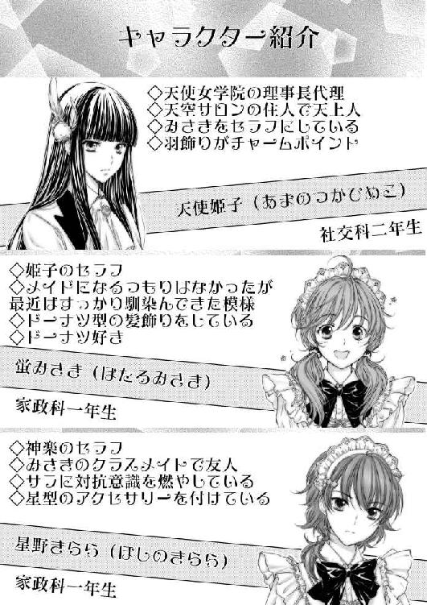

| ガールズキングダム６: サクラ色の風 (ＧＬ文庫) | |
| なよ | |
| 愛中出版株式会社 ＧＬ文庫編集部 (2017) | |



私立天使女学院――
小高い丘の上にそびえるお城のような学び舎は、創立百周年を迎える由緒正しきお嬢様学校として、その名を響かせている。
蝶よ花よと愛でられながら、淑女として羽化する前の、天使のような少女達が過ごす庭。
そこに、十年ほど前から新しい花が咲くようになった。
お嬢様達のお世話をする為に、メイドを志すたんぽぽのような花たち。
白百合の傍に咲き誇り、力強く大地に根を張り、真っすぐに先だけを見つめる。
そこはお嬢様とメイドを志す者が共に過ごす、世にも珍しい学び舎なのだった。
一、嵐の予感？
ここ天使女学院では、お昼休みには、家政科の生徒が社交家の生徒の昼食を配膳するという習慣がある。
メイドを志す家政科の生徒にとって、それはとても大事なお仕事の一つ。
セラフやエクスシアは当然のことながら自分のお嬢様のお世話をし、その他の生徒も、お部屋係になった子たちが、それぞれのお嬢様達の食事をかいがいしく運び、共に昼食を摂ることになっている。
社交家の生徒と家政科の生徒との出会いの場を増やし、少しでも多くのセラフを誕生させる為の配慮というわけだ。
お部屋係は一ヶ月に一度変わるものだから、六月に入ってすぐの今頃なんかは、新しいお嬢様の為にと、若干ドタバタとしながら配膳する姿が見受けられる。
新しいお嬢様の苦手な食材が入っていれば、少なくしてもらえるように交渉したり、卵焼きは塩味がいいだの醤油味がいいだの、サラダは胡麻ドレッシングにしてだとか、ノンオイルの和風ドレッシングがいいだの、お茶は緑茶だ、いやダージリンティがいいだの。そこかしこで新しいお嬢様の好みを把握するべく、家政科の生徒たちは神経を尖らせている。
わたしはというと、この学院に入学したその日に、姫子さんのセラフになったものだから、生憎とそういった味の好みを毎回覚える必要もなく、すでに姫子さんの好みは把握済みなので、非常に気楽なものである......はずだったのだけど。
「ほら、新しくお嬢様がいらしたわよ」
「あの方のお名前は？ お嫌いな食べ物はなんだったかしら？」
「そんなの知りませ～ん」
九絵姉妹の問いに、わたしは半泣きになりながら答えた。
「きららはわかる？」
「名前......だけでしたら。好みまでは......」
「はー、ダメですわね」
「ダメダメですわねぇ」
九絵姉妹が、わたしの背後でこれ見よがしにため息をついて首を振る。
そんなこと言われても、知らないものは知らないのだからしょうがない。
もちろん知らないと言ったからといって、九絵姉妹が解放してくれるはずもなく――
一体、わたしたちが何をやっているのかというと――
昼食を摂りに来るお嬢様たちの、パーソナルデータを覚えさせられているのだ。
六月に入り、どうやらお客様扱いが消えたのか、それとも九絵姉妹が先輩風を吹かせたいと思ったのか、昼食時に出入り口に待機させられ、次から次へとやってくるお嬢様たちの名前や好みをこうして問われては、当然知らないのでダメ出しをされるということを繰り返しているのだ。
わたしときららちゃん、それぞれの背後に九絵姉妹が張り付き、というか逃げられないように体を抱え込まれ、耳元で囁くようにして、わたしたちに無理難題を問いかけてくる。
初めはそんなこと知らなくて当然だし、自分のお嬢様以外のことをそこまで知る必要なんてないと思ったのだけど、始めて五分経つ頃には「あれっ？」と、とある疑問が脳裏をよぎり、十分経った頃には背筋がぞっとするような結論に至ったのだ。
「いいですこと、あの方は財前寺時子様」
「財前寺というお寺の娘さんで、肉はあまりお食べにならず、魚を好んで食べますわ」
「魚の中でもサンマとマグロがお好きで、ハマチやカンパチはあまり好きではないようね」
「飲み物は緑茶が基本で」
「勉強中は珈琲も嗜むみたいですわね」
などと、わたしたちの答えられなかったデータを、九絵姉妹はスラスラと囁いてくるのだ。
もちろんその方だけではなく、次から次へと訪れるお嬢様全ての名前と好みを把握しているかのごとく、当たり前のように全員のパーソナルデータを口にする。
もしかしなくても、九絵姉妹は全てのお嬢様たちのデータを覚えているのだ。
初めは九絵姉妹のお遊びが始まってしまったので、どうやって逃げだそうかと考えていたのだけど、どうやら本格的に教育的指導をしにきているのだとわかってしまってからは、逃げ出すことが出来なくなってしまった。
天空サロンの一員として、そして姫子さんにお仕えするセラフとして、「これくらいのことが出来ないとおかしいですわね」なんて言われたたら、もうやるしかないのである。
まあ、九絵姉妹にしてみれば遊び半分なのかもしれないけど、わたしにしてみれば、とんでもないことが始まってしまったのだと、冷や汗をかかずにはいられない。
「さあ、次ですわよ」
「あら、今度はボーナスゲームですわね」
ヒアカムアニューチャレンジャー、というわけではないけど、九絵姉妹の声で扉の方へ視線を向けると、そこには西天離宮の支配者である猫屋敷飛鳥様が、にがーい顔をしてこちらを見ていた。
その表情は、また何か馬鹿なことをやっている、と雄弁に語っており、関わり合いになるのだけは止めようと思ったのか、早歩きでわたしたちの前を通過していってしまう。
わたしの目の前で飛鳥様の美しいおでこが光り輝き、それに負けないくらい美しいく輝くハート柄の連なったティアラが、リボンと共に頭上に付けられていた。
背中まで伸びたゆるく波打つ髪はよく手入れをされており、おそらくは飛鳥様のセラフであるめいさんが、心血を注いでいるのだろう。姫子さんのストレートヘアとはまた違った魅力がある。
飛鳥様に助けてもらうのは無理ではあるけど、確かにこれはボーナスゲームでもある。
「あの方は猫屋敷飛鳥様ですね」
「はい、正解ですわ」
「それで、好きな食べ物と嫌いな食べ物は？」
「ええと......」
問われて言葉が詰まる。
しまった。名前はもちろんわかるのだけど、好みの把握まではしていない。
同じ西天離宮のメンバーである熊城絵理栖様であれば、以前いろいろとあったおかげで好みの把握もできているのだけど。
「はい、時間切れですわ」
「きららも、好みまでは言えそうにありませんわね」
「はい......」
きららちゃんがうな垂れる。
「まったく、日々の情報収集を怠っているからですわ」
「セラフとはただのメイドではない。一流のメイドである証なのですから、こんな調子では困りますわ」
「うう......」
「申し訳ありません」
言い返す言葉もなく、素直に頷くしかない。
きららちゃんは、わたしなんかよりもはるかにこの学院のことに詳しく、お嬢様たちのこともよく調べていたはずなのにこれである。
九絵姉妹の情報収集能力に舌を巻くしかない。
「ま、今日はこれくらいでいいですわ」
「さっさと食事を頂きますわよ」
そう言うと、ようやく九絵姉妹は解放してくれたのだった。
「はあー、遅くなりました」
自分の食事を持って、天空サロンのメンバーが集まるいつもの席へたどり着くと、姫子さんが「お疲れさま」と、優しい笑顔で出迎えてくれた。
ちなみに姫子さんの食事は真っ先に用意を済ませていたので、もうすでに半分くらいは食べ終えていたようだ。
「ごめんなさいね、先に頂いているわ」
申し訳なさそうに、姫子さんが口元を押さえた。
「いえいえ、とんでもございません。わたしの知識不足で遅れてしまっただけですから」
自分のお仕えするお嬢様に気を遣ってもらえるなんて、メイド冥利に尽きるというものだ。
「大変だとは思うけれど、あやかさんたちもみさきと仲良くしたがっているみたいだから、しばらくは二人にお付き合いしてあげてちょうだい。きっとみさきの為にもなることだと思うわ」
「はい、わかりました」
姫子さんのお願いがなくても、きっと断るようなことはしなかっただろう。
正直、あまり熱心にメイドとして働いているように見えない九絵姉妹だったけど、相手のパーソナルデータをあそこまで調べているなんて、ちょっと意外というか、見直したところがあったのだ。
自分たち以外のことなんてどうでも良さそうなのに、なんだかんだで社交科のお嬢様たちにはちゃんと敬意を持っていて、失礼がないようにと考えているのだろう。
あれだけ沢山の人のパーソナルデータを集める苦労は相当なもの。見えないところで努力するタイプなのかもしれない。
そういえば、天空サロンでも言葉遣いが悪いから態度も悪いというイメージがつきがちだけど、言葉遣い以外の仕事は完璧なのだ。
お客様のもてなし方、お茶の入れ方、掃除の仕方。テーブルのセッティングや細かいところへの配慮など。今思い出してみれば、完璧に近い、というか、きっと完璧にメイドとしての仕事をしていたのだ。
だから、色眼鏡を外して見てみれば、他の天空サロンの先輩セラフと同じかそれ以上の能力を持っていて、その人たちが直接指導してくれるというのは実にありがたいことなのである。
どうせ食事の時間なんて勉強するわけでもないし、これもきっと何かの役に立つかもしれないので、学べるものは学んでおいた方がいいだろう。
「わたし、少し勘違いしていました。あんなにもお嬢様たちのことをよく知っているなんて、あやかさんたちはメイドとして勉強熱心なんだなって。なんだかんだで神楽様の為に頑張っているんですね」
ようやくというか、やっとあの姉妹のことが尊敬できた。
恥ずかしいけど素直な感想を口に出していると――
「ぷっ、何を言っているのかしら」
自分の食事を持ってきた――これは文歌さんか――楽譜模様のリボンを身につけた文歌さんがお盆をテーブルの上に置いて、わたしの後ろから抱きついてきた。
「貴女、何か勘違いしているんじゃないの？」
そう耳元で囁いて、姫子さんに見えないようにしてわたしの背後からお尻のあたりをまさぐってくる。
「ちょっ」
身をよじるわたしの耳に、さらに口を寄せてくる。
「メイドとして勉強熱心ですって？ 馬鹿馬鹿しい。いいこと？ 私たちがデータを集めているのは、相手の性格や好みを把握するためでもあるけれど、相手の弱点を知るためでもあるのよ？ 相手のことを知れば知るほどに、相手の欲しがっている物や言葉を与え信頼と隙を作り、また相手の弱みを握ることでこちらの意のままに動かすことが出来るようになる。全ては私たちの為にやっていることよ。みさきたちに私たちの知識を教えてあげるのは、まあ暇つぶしと、かわいい後輩への手向けね。私たちと同じ情報を持っていても、使う人間によってどれだけの差が出るのか見てみたいというのもありますもの」
「は、はあ......」
「うっふふ。いいこと？ 社交家の生徒も家政科の生徒も、全員私たちの手の平の上でコロコロですわ」
「......」
折角尊敬できると思ったのにこれである。
まあ、なんというか、この姉妹はこの学院のシステムにおとなしく収まるような性格ではないから、それらしいといえばそれらしいのだけど。
「みさきもはやく私たちと同じくらいにならないと、もっとコロコロしてしまいますわよ」
そう言って、文歌さんがさらにわたしのお尻を撫でてくる。
「鋭意努力致します」
にっこりと微笑みながら、九絵姉妹の手の甲を軽くつねって小さくため息をついたのだった。
「お食事中のところ少しよろしいかしら」
お食事中と言ってきたのは、おそらくアンジェリカ様の配慮だろう。わたしたちはもうほとんど食事は済ませて、ささやかな食後のティータイムを楽しんでいるところだったのだから。
......そう、わたしたち天空サロンのメンバーが集まるテーブルへとやってきたのは、他でもないアンジェリカ様だったのだ。
美しい金色の髪がしなやかに肩から背中に流れ落ち、ほんの少し顔を動かすだけでさらりさらりと揺れる。髪と同じ色の瞳は瞳孔部分がすっと縦に伸び、その瞳を見ていると、なんだか頭がぼーっとしてきてしまうような、引寄せられるような感覚に陥る。
頭には十字架模様が並んだヘアバンドに、蝙蝠のオブジェをあしらったティアラが斜め四十五度の角度で飾られている。
その、深い金色の瞳と視線が合い、条件反射のように思わず顔を背けてしまう。
つい先日アンジェリカ様の正体を――今でも信じられないのだけど、吸血鬼......ヴァンパイアだと知ってしまってからは、近づきがたさが一段と増してしまい、これは恐怖なのか、それともただ単になるべく関わり合いになりたくないという深層心理なのか、ついつい避けてしまうようになってしまったのだ。
「まあ、アンジェリカ様。もちろん構いませんわ」
物腰柔らかに対応したのは、天空サロンの支配者であるところの御影神楽様だ。
生徒会長直々に足を運んで来たとあっては、例え歓談中であったとしても、それなりの対応をしなければ失礼になる。
神楽様は軽く手を上げて九絵姉妹に合図を出そうとして、ほんの少し何かを考えた後、
「きらら、席の用意を」
そうきららちゃんに告げた。
「はい、ただいま」
嬉しそうにきららちゃんが立ち上がる。
神楽様は、最近よくこうやってきららちゃんに指示を出すようになってきた。
セラフとして信頼され始めているということなのだろう。
「ああ、それには及びませんわ。少し予定の変更があったものですから、それを姫子さんにお伝えしたかっただけですので」
アンジェリカ様がきららちゃんの両肩に手を置いて、ごめんなさいね、と言って座らせる。
「いえ、お心遣いありがとうございます」
なかなかわたしではお目にかかれない笑顔で、きららちゃんはアンジェリカ様に微笑みかける。こういった仕草もずいぶんと板についてきたものだ。
そんなきららちゃんに微笑み返してから、アンジェリカ様は姫子さんに話しかける。
「姫子さん、例の留学生の件なのですが、少し早めにこちらに来ることになったそうでして」
「まあ、そうなのですか」
「それで、改めて予定の確認などをしたいので、今日の放課後に第一会議室に来て頂けますか？」
「わかりました」
「それで、その時に」
チラリ、となぜかアンジェリカ様がわたしの方を見る。
いやーな予感......。
「みさきさんも一緒にお連れ頂けると嬉しいのですが」
やっぱり、と思わず苦い顔をしてしまう。
「みさきもですか？」
これには姫子さんも少し首をかしげた。
「ええ、留学生の件にも少しですが関係がありまして、みさきさんのご友人のことでお話を伺いたいことがありますので」
ああ......と、なんとなくアンジェリカ様の言いたいことがわかった。
わたしの友人、というのはサラちゃんのことを言っているのだろう。
そして、留学生というのはもしかしなくても、サラちゃんの言っていたお嬢様のことに違いない。
「私はもちろんみさきをお連れするのに何の問題もありませんけど、みさきは大丈夫？」
そんなことを確認されなくても、姫子さんが行きなさいと言えば、二つ返事でハイと答えるに決まっている。
「もちろん大丈夫です」
「それは良かったわ。もしかすると神楽さんにも関係してくるかもしれませんが、まだ秘密にさせてくださいね、フフっ」
アンジェリカ様が悪戯っぽい笑みを浮かべる。
「まあ、それはとても気になりますけど。......わかりました。教えて頂ける日を楽しみにしていますわ」
それだけで何かを悟ったのか、神楽様は少し真剣な顔で頷いた。
「それでは用件は済みましたので失礼致しますわ」
そう言って優雅にスカートを少し持ち上げて軽く頭を下げると、アンジェリカ様は去って行ったのだった。
＊＊＊＊
「きららちゃん、今日はわたし姫子様の会議に付き添ってから、天空サロンへ行くから」
終礼の合図が終わると同時に、わたしは鞄を引っ掴みながらきららちゃんに告げる。
「ええ、わかっているわ。みさきに何の用があるのかは知らないけれど、私にも話せるようなことだったら、あとで教えてね」
「うん、わかった」
それだけ言うと、急いで教室を飛び出す。
「みさきさん、廊下は静かにですよ～」
「す、すみませんっ」
教室を出たところで、先に教室を出ていた日依先生に見咎められ、慌てて頭を下げて早歩きに切り替える。
走り出したいのを押さえて向かう先は姫子さんの教室。
いつもは天空サロンでお出迎えしているのを、せっかくだから今日は教室まで行ってお出迎えする、というのをしたいのだ。
その為には急がなければ。
是が非にでも姫子さんが教室を出る前に辿り着き、笑顔でお出迎えをするのだ。
中庭を挟んだちょっと長めの渡り廊下を歩き、社交科の生徒達の教室がある校舎へ入ると、思わず「おおっ」と声が出て足が止まった。
わたしたちの使っている教室棟も、学校とは思えないほど綺麗で華麗な造りなのだけど、社交科のお嬢様たちのいる教室棟はさらに一段階上のものだった。豪華で贅沢といった言葉がよく似合う。
廊下の至る所には、値段を聞くのも馬鹿らしくなりそうな大きな花瓶が備え付けられ、その中には色鮮やかな花々が飾られている。
壁はただコンクリートを塗り固めただけのものではなく、一分の隙も無く装飾タイルが貼り付けられているし、階段の手すりも複雑な彫刻が施され、まさにお城か宮殿かといった様相だ。
廊下のタイルも天井も、何から何まで家政科のものとは違う。
こ、これは......。
思わず足がすくむ。
同じ家政科である上級生のクラスを訪れたときとは、また違う緊張感がある。
いや、緊張感というか、本当にわたしがこの美しい廊下を歩いていいものなのかと不安になってしまう。
完全に場違い。異世界に迷い込んでしまったかのようでもある。
しかし、ここへ足を踏み入れなければ姫子さんのいる教室へ向かうことは出来ない。
「うーん......」
完全に気後れしていると、
「そこの貴女......、あら、確かみさきさんね。こんなところで立ち往生してどうかしたの？」
と、誰かに声をかけられた。
「あ、いえ......」
聞き慣れない声ではあるものの、もはやこっちは知らなくても向こうはわたしのことを知っている状態にも慣れてきたので、ゆっくりと振り返る。
振り向いてその人を確認すると、どうやら家政科の上級生らしく、リボンの色から二年生と判断出来た。ゆるいカールのかかったセミロングヘアーに、好奇心旺盛そうなぱっちりとした瞳。口元には軽い笑みを浮かべている。さすが上級生、隙の無い立ち姿、と惚れ惚れしてしまう。胸元には、セラフである証の金色の校章が輝き、さらにはメイド服が一般的な物ではなく、特別にあしらえた物――すなわちどこかのサロンに所属し、そこ専用のものであることが伺えた。
ちなみに家政科の生徒は、午前中の授業は制服のまま受けて、お昼の配膳時にメイド服を着用し、午後の授業はメイド服のまま受けるといったことが多い。
午前中でもメイド服を着用するような科目があれば、もうその後はメイド服のままということもよくある。
ともあれ、知らない人ではあるけれど、セラフの先輩に声をかけてもらえたのはありがたい。
「あの、実はですね。わたしなんかがこの綺麗な廊下に足を踏み入れていいのかどうか迷っていまして」
そう言うと、二年生のお姉様は、
「あー、わかる。わかるよ、その気持ち。最初はみんなそうなんだ。でも、みさきさんなら何も遠慮することはないし、普通の家政科の生徒だって用事があれば誰に断る必要もなく、入っていいんだから」
と、人なつっこい笑顔でわたしの肩を叩いてきた。
「もちろん礼儀作法は大事だし、無礼な振る舞いはしちゃいけないけど、社交科のお嬢様たちにとって、家政科の生徒がいることはごく普通のありふれた光景だから、誰も――と言いたいけど、みさきさんだと少しは注目されちゃうかな。まあ、社交科の教室棟を歩いていてもお嬢様方は気にしないよ」
「そうですか？」
「うん、それにほら、この時間だとみんなお嬢様のお出迎えをしに来るから、むしろここにいるほうが注目を浴びちゃうだろうね」
そう言って、指し示された先を見ると、いつの間にやらこの壮麗な廊下に、沢山のメイド服姿の生徒達が行き交うようになっていた。
わたしたちが話している間にも、後ろを続々と家政科の生徒が通り過ぎていく。
そして、よくよく見ると、メイド服姿が意外とこの光景に合っている気さえしてきたのだ。いやむしろ、この非現実的な場所にこそ、メイド服姿がよく似合うといってもいい。
「あ、以外と普通な感じなんですね」
なんだ、そこまで緊張する必要はなかったんだ。
「みさきさんは、社交科の教室棟へは来たことはないの？」
意外そうにそのお姉様は言うけど、
「そうなんです。実はまだ足を踏み入れたことがないんです」
社交科の教室棟へ入りづらいというのももちろんあったけど、天空サロンの先輩達も基本的にはサロンでお嬢様たちを出迎えているので、わたしもそれに倣っていた。何より、サロンの掃除や出迎えるための準備をしなければいけないので、とてもじゃないけど教室へ迎えに行く余裕なんてないのだ。
他のサロンがどうしているかはわからないけど、少なくとも天空サロンでは、教室へまで迎えに行くという習慣はなかった。
「そっか、じゃあ今日は私がエスコートしてあげましょう」
「本当ですか？ ありがとうございます」
名も知らない先輩セラフに声をかけて頂いて、さらにはこうして助けてもらえるなんて、名前と顔が知られていると言うことは、意外と悪くないのかもしれない。
「いいのいいの、なんせ目的地は同じなんだから」
「そうなんですか？」
「うん、私のお嬢様はなんと姫子様と同じクラスなのさ」
二年生のお姉様は、えっへんと、胸を張る。
「それは奇遇ですね」
「おかげで姫子様のことをよく聞かされたりするよ。最近はみさきさんをセラフにしたことで明るくなって、以前よりもずっと話しやすくなったり、セラフの自慢話に付き合ってくれるようになったとか」
「ええっ......」
姫子さん、教室でそんなことしているんだ。
「まあ、とにかくここで話していても時間が勿体ないわ。教室へ向かうことにしましょう」
「はい。あの、ところで名前をお伺いしてもよろしいでしょうか」
ここまで親切にしてもらって、名前も知らないでは許されない。
後で、姫子さんにこういった人に案内してもらったんです、と話題にすることもあるだろうし、その時に、「名前は知りません」では呆れられてしまうだろう。
九絵姉妹のようにとは言わないけれど、他の人の情報をもっと知っていた方がいいのかもしれない。
もし、この人が姫子さんと仲の良いお嬢様のセラフだったりしたら、わたしが顔すら知らないことを不快に思ってしまうかもしれないのだ。
だとすると、名前も後でこっそり確認した方がよかったのかも......。まさか、すでに会ったことがある、なんてことは......。
......ああ、そうか。その為にお披露目会なんて制度があるのか。あのときにしっかりと訪問したサロンのメンバーを覚えていれば、こんなことにはならなかったのかもしれない。
どうやら、ここではパーソナルデータというやつが思いの外重要のようだ。
「私の名前は菊池まり。マリーって呼んでね」
「マリー......ですか？」
どうやらまり先輩......マリーさんはわたしが名前を聞いたことを取り立て気にしていないようで、人差し指を頬に当て、ちょっとお茶目なポーズで名前を教えてくれたのだった。
＊＊＊＊
社交科の教室棟――
初めて足を踏み入れたその場所で、わたしは少し不思議な光景を目にする。
一年生の教室のある階では、その数が少なかったのであまり変に思わなかったのだけど、二年生の教室のある階へと上がると、すぐにそれが目についた。メイド服姿の生徒がみな、教室の出入り口近くの窓際に、綺麗に並んで立っているのだ。
「あの、あの方達は何をしているのでしょうか」
マリー先輩の後をついて行きながら、その背中に小声で質問を投げかける。
「ああ、あれは出待ちだよ」
「出待ち？」
「そう。自分のお嬢様が教室から出てくるのをああして待っているの」
「そうなんですか。どなたかに取り次いで頂いたりというのはないんですか？」
めいさんの元を訪れた時に、あおい様がしていたように、近くにいる方にお願いすれば、と思ったのだけど――
「基本的にはないかな。私たちがこの教室棟へ来る時は何か用事があるときだし、お嬢様に呼ばれて来たのだったら後ろの扉から入って、直接席まで行くしね」
「はー、なるほど、そういうものなんですか」
「もちろんその時の礼儀作法もあるよ。後ろの扉が閉まっていたら、二回ノックをしてから開ける。そして誰も見ていなくても、教室に入る前に失礼致しますと言って、お辞儀をしてから入るの。その後はよそ見をせずに、お嬢様のところへ行くと――」
「そんなルールがあるんですね」
マリーさんがわざわざその場で実演をして見せてくれる。
確かに、わたしたちから社交科の生徒にお遣いをお願いするなんて、ありえないことといえる。
「まあ、これはローカルルールみたいなものだから、授業では教えてくれないね。みさきさんはまだ教室へ呼ばれたことがないから教えてもらっていないだけで、その必要があったときは、お嬢様から教えてもらえるはずかな」
「だとすると、今みなさんが廊下で待っているのはなぜなんですか？」
そんなルールがあるのなら、待たずに教室へ入っていけばいいのに。
「それは簡単。今はまだ社交科のホームルームが終わっていないから、こうして待っていることしかできないのよ」
「えっ、そうなんですか？」
よくよく見なくても、現在廊下にいるのは家政科の生徒だけだ。社交科の生徒は一人も見当たらない。
「こうやってお出迎えする生徒がいるから、社交科の時間割は家政科よりも十分遅くなっているのよ」
「へえ、初めて知りました」
なるほど。だから、いつもわたしたちよりも姫子さんたちのほう天空サロンへ来るのが遅いのか。あれはわざと遅れて来ていたというわけではなかったんだ。
「出迎えるときにも多少のルールがあって......と、姫子様のクラスはここだね」
マリーさんが室名札を見上げる。
「はい、そうですね」
姫子さんのクラスの前にも、すでに数名の生徒が待機していた。
その人達に向かって軽く頭を下げて、マリーさんも隣に並ぶ。
わたしもそれを真似してマリーさんの隣に並んだ。
「ま、別に難しいことじゃなくて、並ぶのは前の出入り口付近の窓側。生徒達の往来の邪魔にならないようにっていうことね。そして先に来た人から順番に並ぶ。並んでからはピンと背筋を伸ばし、両手をお腹の下あたりで重ね合わせて、目線はまっすぐ前に。ホームルームが終わって、先生やお嬢様たちが出てきたら、目礼をする。自分のお嬢様が出てきたら、深々とお辞儀をして存在をアピールして、行き交う人の邪魔にならないタイミングでお嬢様のそばに行ってご挨拶をするって感じかな」
「なるほど」
これも暗黙の了解的なものなのだろう。マリーさんに教えてもらわなければ、とんでもない礼儀知らずをしてしまうところだったかもしれない。
「お嬢様の元へ行ってからは、お嬢様との打ち合わせ次第だけど、まずはお疲れ様でした、って言ってから、お荷物をお持ち致します、って流れが初めての人向けのやり方かな。あまり荷物を持たせるお嬢様はいないけど、礼儀としてこちらからは聞いておかないといけないからね」
「なるほど」
再び頷く。
「姫子様はそういうところは厳しいの？」
「いえ......」
全然、と言おうとして、少し考える。
本当のことを言ってしまってもいいのだろうか。
うーん、姫子様はそんな堅苦しいことをするお嬢様だというイメージは望んではないと思うし......。
「いえ、姫子様はとても優しい方ですので、あまり厳しいことは言われませんね」
「それはいいね。私のお嬢様は結構礼儀にうるさくてねぇ。しょっちゅう喋り方とか注意されてるよ」
マリーさんが両手を軽く上に向けて、やれやれ、とため息を吐く。
「あははっ」
それが本当に嫌がっているようには見えず、ちゃんと主従関係を構築した上での軽い愚痴だと思えたので、素直に笑うことにした。
「さ、お喋りしていたおかげで、もうすぐお嬢様たちも出てくる頃かな」
マリーさんが表情を引き締めて、背筋をピンと伸ばす。両手をお腹の下で軽く合わせて佇む姿は美しい絵画のようですらあった。
さすが上級生。ちょっとふざけたところを見せつつも、決めるところは決めてくる。
わたしもマリーさんを真似して、いつも以上に背筋を伸ばして姫子さんが出てくるのを待つのだった。
ほどなくして鐘が鳴り、教室の中が騒がしくなるのを感じた。
どうやらホームルームが終わったらしい。鞄を机の上に置く音、何かを片付ける音、わずかに聞こえてくる話し声――
姫子さんはいつくらいに出てくるのだろうか。
こうして待っているわたしを見て、驚いてくれたりするのだろうか。まさか気がつかずにスルーされる、なんてことは無いと思うけど。
そんなことを考えていたら、扉が静かに開いた。
最初に出てきたのはどうやら担任の先生のようであった。
タイトなスカートに、花柄のシャツ。首にスカーフを巻いて、なかなかのおしゃれ具合だ。背中まで伸びる茶色の髪は綺麗なカールが巻かれていて、シンプルなものを好む日依先生とは正反対のように思えた。
先生は当然わたしたちの出待ちにも慣れた物で、わたしたちが揃って目礼するのとほぼ同時に、挨拶を返してくる。
そのまま職員室へ帰るのかと思っていたら、三歩ほど歩いたところで、急にバックをしてきた。
突然のことに、わたしだけではなく、同じように並んでいる他の人たちも、一瞬ビクッと体を震わせる。
「んんっ、見慣れない顔があると思ったら、君はみさきちゃんじゃないのかね」
どうやらバックしてきたのはわたしが原因のようだ。
「は、はい。そうですけど......」
近い――
ものすごく近距離から見られている。
思わず視線を逸らしてしまう。
「ふーむ、なるほど。姫子さんの選んだセラフとやらを、一度見てみたいとは思っていたのだよ」
ジロジロと色んな角度から無遠慮に観察される。
「いや、なかなかどうして、大人しいタイプではなさそうだが、入学する以前から約束していたのだったかな？」
「ええと、そうですね」
対外的にはそういう設定になっているんだよなぁ、と思い出す。
「ふむ」
先生はちょっと不思議そうな顔をする。わたしに変なところでもあっただろうか。
この短時間で仮初めの契約だと言うことがバレたということはないと思うのだけど......。
なんて、内心ビクビクしていると――
突然、先生がわたしのスカートを掴んできて、そのまま持ち上げようとしてきた。
「ちょっ、何をするんですかっ」
慌ててスカートを両手で押さえる。
「いやなに、姫子さんとみさきさんが、お揃いの下着を買ったというのを耳にしたことがあったから、今も穿いているのか気になって」
「いやいやいや、意味がわかりません」
確かに今日はあのお高いランジェリーを着用してはいるけど、他人に見せるつもりはまったくない。見せてもいいのは姫子さんくらいのものだ。
必死に抵抗すると、先生はあっさりと手を離してくれた。
「ははは、ちょっと確認してみたかったのだよ。あの姫子さんがセラフにしたのはどういう子なのかをね」
先生はそう言って、笑いながらわたしの肩を叩いた。
「従順なだけのメイドでは物足りなかったということかな」
勝手に何かを納得したようで、満足げな笑みを見せる。
「いや、驚かせてしまって申し訳ないが、みさきさんには感謝しているのよ？」
「はあ？」
「私は姫子さんが一年生の時も担任をしていたのだけど、君をセラフにしてからは目に見えて明るくなったし、おかげで授業もやりやすくなったし」
「そ、そうですか」
「やっぱりねぇ、理事長代理なんていう生徒がいたら私も気を使うじゃない？ ピリピリとした空気を出されるとどうしても腫れ物扱いになっちゃうところがあってねぇ。でも、最近は普通の生徒と同じように接しても大丈夫になってきたから助かっているのよ。セラフ一人でこんなにも違うのかって――」
「あの――」
突然に、聞き覚えのある声が、先生の後ろから聞こえた。
良く澄んだ、わたしの耳に馴染む声――
確認するまでもなく、それは姫子さんのものだ。
先生もそれに気がついたようで、驚くべき早さで振り返る。
「あら、姫子さん。今日は確か生徒会長との打ち合わせがあるのだったかしら？」
「ええ、そうですけど。花森先生、私のセラフにあまり変なことを吹き込まないで頂きたいのですが。......というよりも、どうしてみさきがいるのかのほうが気になるところだけれど」
この先生は花森先生というのか。
「姫子様を驚かせようと思って、内緒で迎えに来てしまいました」
「そう、仕方のない子ね」
そう言う姫子さんだったが、心なしか嬉しそうにしているのがわかった。
「みさきのような子がいるなと思ってよく見たら、本当にみさきなんですもの。とても驚いてしまったわ」
言いながら、姫子さんはわたしの腰に手を回して、軽く引き寄せてきた。
その力に逆らわず、わたしは姫子さんの胸元に抱かれるような体勢になる。
どうやら花森先生の魔の手から救い出してくれたようだ。
とたんに、「きゃーっ」という小さな黄色い悲鳴がわき起こった。家政科の生徒が反射的に叫んでしまったらしい。すぐに口元を押さえて静かになったけど、こちらに視線が釘付けだ。
姫子さんの注目度の高さが改めて知らされる。
「みさきにはまだ出迎えるときのルールは教えていなかったけど、ちゃんと守れていたのね。偉いわ。よく勉強しているわね」
姫子さんがわたしのお下げを手にとって、優しく撫でてくる。
しばらく身を委ねてしまいたい衝動にかられたが、今がどういった状況なのかを思い出し、慌てて意識を引き戻す。
「いえ実は、こちらのマリーさんに教えて頂いたんです」
わたしが紹介をすると、
「ただいまご紹介を頂きました、マリーこと、菊池まりと申します。私の主より、マリーの名を頂戴しておりますので、どうかそうお呼び下さい」
マリーさんはスカートの裾をこれでもかというくらい広げて、脚を交差させながら膝を折ったのだった。
「マリーさんね、わかりました。こうしてお話をするのは初めてだけれど、貴女のことはもちろん知っているわ。ここでよく見かけていたし、露木沙梨さんのセラフよね」
「私のことを知っていて下さったなんて光栄です。その通り、ロザリーお嬢様のセラフでございます」
「ロザリー......。そう、沙梨さんはそう呼ばれているのね」
少々困惑気味に、姫子さんは呟いた。どうやらその呼び方は初耳だったようだ。
露木沙梨で、ロザリーか。そして、まりさんはマリーと。ふむ、なんとなくマリーさんの所属しているサロンがどういうところなのかわかってきたような......。
「ちょ、ちょっとまりっ！ その呼び方はサロン以外ではしないように言っておいたでしょう」
突然、教室の中から、風のごとく飛び出してきたお嬢様が一人。
突風のような勢いで、マリーさんの口を手で押さえる。
「申し訳ありません、姫子様。うちのまりがおかしなことを口走ってしまったようで」
愛想笑いを浮かべながら、そのお嬢様はマリーさんの口を両手で塞いでしまった。
美しく艶のある黒髪がマリーさんとは対照的なお嬢様で、サイドに編み込みがあるところ以外は癖一つ無く、真っ直ぐなまま背中の辺りまで伸びていた。顔を赤く染め、申し訳なさそうにはにかむ姿からは、マリーさんから聞いたような厳しいイメージは受けない。感情豊かな可愛らしいお嬢様に思える。頭の上斜め四十五度の角度には、ピンク色の宝石が多数埋め込まれた、薔薇をモチーフにしたようなティアラが輝いていて――
って、この方サロンの支配者だ。
「んーっ！」
マリーさんが抗議するかのように声を上げるが、沙梨様がきつく口を押さえているせいで、何を言っているのかさっぱりわからない。
「いいのではないかしら？ ロザリーさんは最近サロンの支配者になられたのだし、サロンの独自性を打ち出す意味でも、名前の呼び方を変えるくらい気にするほどの物ではないのでは？」
姫子さんが軽く微笑みながら頷く。
「いや、まあそうなんですけど、まだちょっと慣れていないので恥ずかしくて......」
頬を染めながら、沙梨様......ロザリー様は、マリーさんの肩を人差し指でなじり始める。
「そうですよ、ロザリー様が決めたことなのですから、恥ずかしがらずにどんどん呼び合っていかないと」
口を押さえられていた手がなくなったことで、マリーさんが息を吹き返す。
ロザリー様を励ますように、「ロザリー様の名前可愛い」「ロザリー様の名前似合ってる」「私はロザリー様の名前を呼べることを誇りに思っています」等々。
ロザリー様の名前を、これでもかというくらい口に出して何度も呼ぶ。
「わかった、わかったからっ」
とうとうロザリー様は顔を両手で覆って、その場にしゃがみ込んでしまった。
「ロザリーという名前に慣れることにするから、今だけは勘弁してっ」
「わかりました」
ロザリー様の言葉に、マリーさんは満足げに頷く。
「姫子様、大変失礼致しました。うちのセラフは悪い子ではないのですが、場をわきまえないところが少々ありまして。あとできつく言い聞かせますので、どうかご容赦下さいませ」
真っ赤になった顔で、ロザリー様はマリーさんの手をきつく握って頭を下げた。
「何も気にする必要はありませんわ。主人思いの良いセラフではありませんか」
姫子さんの言葉に、ロザリー様は複雑そうな笑みを浮かべる。
「そう言って頂けると嬉しいのですが......。ともあれ、わたくしたちはこれで失礼致します。また明日、ごきげんよう」
「ええ、ごきげんよう」
そう言って、波が引くように、ロザリー様とマリーさんはサーっといなくなったのだった。
「なにやら新しい交流が生まれたようでなにより。うんうん、学生らしくて良い。それでは私も職員室へ戻るから、みんな気をつけて帰るように」
それまで静かに傍観していた花森先生が、姫子さんとわたしの肩を軽く叩いてその場を去ろうとする。
その背中に、
「花森先生、みさきに変なことを吹き込まないと言うこと、よろしくお願いしますね」
姫子さんが小さなため息を吐きながら、追い打ちを掛けたのだった。
＊＊＊＊
第一会議室へ入ると、すでにアンジェリカ様が先に来ていたようで、部屋の中の準備が整えられた後だった。
会議室らしく、質素な室内であるものの、やはりよく見れば柱の彫刻や、壁のタイルが普通とはかなりレベルの違う壮麗さになっている。
椅子も机も、どこぞのブランド品といった感じだ。
「いらっしゃい、お待ちしていましたよ」
窓辺から外を眺めていたアンジェリカ様が振り向き、優しい笑顔で出迎えてくれる。
思わず、日光は平気なんだろうか、なんていらぬ心配をしてしまう。ああしているからには平気なのだろうけど。
半分ほど開けられた窓からは、初夏の匂いを含んだ空気が流れ込み、優しく鼻腔をくすぐる。
テーブルの上には資料が入っていると思わしきバインダーと、お茶を入れるための道具が揃えられていた。
「まあ、どうぞ座って下さい。今お茶を淹れて差し上げますので」
そう告げて、アンジェリカ様が自らお茶の用意をしようとする。
「わたしがやりますので」
慌てて代わろうとするのを、アンジェリカ様がやんわりと制してくる。
「いいのですよ。以前みさきさんに美味しいお茶をごちそうになりましたので、今日は私からのお礼です」
「そんな、勿体ない」
「ふふっ、まあ見ていて下さい」
アンジェリカ様は喋りながらもテキパキと準備を進めていく。
その手つきは、非常に慣れた物に見える。
「私も長らく独り身でいますからね。これくらいならなんてことはありません」
そういえば、アンジェリカ様のセラフは見たことがないし、いるという話も聞いたことがなかった。
「こればかりは相性という物もありますしね。なかなか私好みの生徒がいないというのもありますし、どうも遠慮されているようで、積極的にアプローチをしてくれる生徒もいないのですよ」
少し悲しそうにアンジェリカ様は告げる。
わたしに言わせてもらうなら、それはアンジェリカ様の持つ強すぎるオーラのせいだと思うのだけど。
離れて見ている分には非常に美しく、もっと傍で見たいと思うのだけど、実際に近寄ってみると、あまりにも眩しくて直視できないのだ。
アンジェリカ様の正体を知っていれば、人ならざる故の物、と納得できるのだけど、それを知らない人には、芸能人のような近寄りがたいオーラが出ていると思われても仕方がない。
「おかげでお茶を淹れる技術だけは巧くなってしまいました」
そう言って出してくれたお茶は、苦みや渋みといったものが絶妙なバランスで保たれた、非常に美味しい物であった。
「すごく美味しいです。わたしが淹れるよりもずっと」
「いえいえ、そんなことはありません。私にしてみればみさきさんに淹れて頂いたお茶の方が美味しく感じますよ。こういうのは気持ちの問題というのもありますが、誰かが自分の為に一生懸命に心を砕いてくれている姿を見ているのですから、美味しく感じないわけがありません」
わたしを見て、アンジェリカ様が微笑む。
「姫子さんも、みさきさんがしてくれることでしたら、どんな些細なことでも、美味しく、嬉しく感じるのではありませんか？」
「え、ええ、それはもう」
突然話を振られた姫子さんは、軽く狼狽しながらも嬉しくなることを言ってくれたのだった。
「お茶の話はそこまでにして、そろそろ本題に入りませんか？」
これ以上自分が弄られてはたまらないと、姫子さんが用意されていたバインダーに手を掛ける。
「ふふっ、そうですね。そうしましょうか」
アンジェリカ様も姫子さんの反応に満足したのか、同じようにバインダーを開いた。
わたしにも用意されていたので、そっと開いてみる。
そこには、履歴書のような形で、転校してくるであろうお嬢様のプロフィールなどが記されたプリントが綴じられていた。
この方がサラちゃんのお嬢様、なのかな。
コピーなのでモノクロではあるものの、顔写真もついていた。
それを見て、思わず「わあっ」と声が出た。
可愛さと美しさが同居している感じというのだろうか。少女から大人の女性へと変わろうとしている途中――でもやっぱりまだ幼さが残るような、そんな印象を受けた。
意志の強そうなぱっちりとした瞳、鼻筋は通り、顔立ちははっきりとしている。
長く伸びたツインテールを桜模様のリボンで縛り、耳の上あたりから垂らしていた。
「この方が今度天使女学院に転入してくるサクラさんになります。姫子さんもお顔を見るのは初めてですよね？」
「そうですね。名前は聞いていましたけど、随分と可愛らしい方ですね」
「はい、そうなんです。とても可愛らしい方なのです」
なにやら含みを持たせた言い方を、アンジェリカ様はした。
「まあ、基本的に何も問題はありません。少し転入時期が早まったことと、正式な書類が揃いましたので、こうして姫子さんに確認して頂きたかっただけです。みさきさんも一通り確認してください」
「は、はい」
わたしなんかが本当にみていいのかな、と思ったけど、アンジェリカ様がああ言ってくれているので問題ないのだろう。
わたしと姫子さんの持っているバインダーの厚さが違うので、見られても問題にならない部分だけをわたし用に用意してくれたのだと思う。
「いかがでしょう。何かお気づきになられた点はありますか？」
そう言われてもなぁ......。まあ一つだけ気になる点がないこともないけど。
言った方がいいのか迷っていると、姫子さんのほうが先に口を開いた。
「なるほど。少し、学院を騒がすことになってしまうかもしれませんね」
「やはり姫子さんもそう思いますか？」
「ええ......」
何がどうなって学院を騒がすことになるのかはわからないけど、アンジェリカ様も姫子さんも、同じ結論に至ったようだ。
「みさきさんはどうですか？」
もう二人が同じ結論なら、わたしが変なことを言っても大丈夫だろう。
「ええと、飛鳥様が、というよりも、めいさんがサロンへ誘うんじゃないのかな、くらいのもですかね」
サクラ様は、正直言って背は高い方でないらしく、このデータのままであるのなら、身長１４５センチと、西天離宮の所属資格をちょうど満たしてしまう身長なのだ。
この可愛らしさと相まって、めいさんなら絶対に見逃すことはないだろう。
「ふふ、そうです。失礼かもしれませんが、どうやらサクラさんは背が小さくていらっしゃるので、間違いなくめいさんが声を掛けるでしょうね。そして、神楽さんも声を掛けるのではないでしょうか」
「えっ？」
神楽様もサクラ様をサロンへ招き入れるのではないか、というのがどうやら二人の意見のようだった。
「サクラさんのご一家が、どうやらデジタル専用チャンネルをもつ会社を経営しているらしく、イギリス国内はもちろん、インターネット配信を使って、全世界で様々な番組を見られるようにしているそうです。その影響力はかなり大きく、おそらく神楽さんとしてはコネクションを持ちたいとお考えになるでしょう」
「神楽さんのやろうとしていることに、広告・宣伝は欠かせませんからね。世界中に影響を持つようなテレビ局やデジタル配信事業者と知り合いになれるのなら、それにこしたことはないでしょうね」
アンジェリカ様の説明を、姫子さんが補足する。
「なるほど」
神楽様は将来、自分自身のスポーツブランドを立ち上げ、美奈子様と専属契約を交わしながら、事業を大きくしたいと考えているようだ。
その事業を軌道に乗せる為には、とにかく知名度を上げることが第一であり、その為にサクラ様を招き入れるのではないか、ということらしい。
「ということは、サロンストラッグルの時のように、神楽様と飛鳥様が争うことになると......」
「まあ、そうなるでしょう」
アンジェリカ様は否定しなかった。
「問題は、サロンを奪い合う制度はあっても、人を奪い制度はないということです」
「はあ......？」
「今までは、複数のサロンに誘われるような人であっても、争奪戦のようになることはまずありませんでした。サロンには相性という物がありますし、例え複数の誘いがあったとしても、不思議と収まるところに収まっていたのです。しかし、神楽さんのサロンは他とは少し違います。神楽さんの目的のために計算されて集められた人材が多いのです。もちろん、みなさん大変仲がよろしいので、これも結局は収まるところに収まったと言えるのですが、それでもまず真っ先に優先されるのは、神楽さんの欲しがる人材か否かです。それに対して西天離宮では明確な所属資格が有り、その資格有りとわかった人には、めいさんが力の限りオファーをかけます。おそらくはどちらも一歩も引かないでしょう。となれば、話し合いでの解決もできず、争いは長期に渡るという可能性も出てきます」
「なる......ほど......」
それはなかなか困ったことになりそうだ。
あの二人は水と油というか、あまり相性の良い二人ではないからなぁ。神楽様に加えて、九絵姉妹まで飛鳥様を煽るものだから、今更仲良く、なんてのも無理そうだし。
んー、でも――
「西天離宮がサクラ様を欲しがるというのは、あくまでもめいさんの主張が大きいからなんですよね」
「そうでしょうね」
アンジェリカ様は頷く。めいさんの小さいお嬢様好きは有名なようだ。
「だとしたら、飛鳥様に今のうちからめいさんを説得してもらえれば、なんとかなるのではないでしょうか」
「それができるのが一番いいのでしょうけど、神楽さんが欲していて、それを知っていて譲るということはまずしないでしょうね」
「そうですか......。あの二人は、かなり仲がお悪いのですよね」
「うーん、仲が悪いというよりは、飛鳥さんが対抗意識を持っている、というところですね。飛鳥さんの家業が御影グループのうちの一つとシェアを争っているようでして、そのせいで昔から御影グループには対抗意識をもっているのだとか」
「ああ、なるほど」
それはなかなか根が深そうだ。
「そういうわけですので、今のうちから何か解決策を練らないといけません。......そして、実はもう一つ問題があります」
「まだ、なにかあるのですか？」
姫子さんが眉を少し吊り上げた。
「これは、正直かなり驚かされたのですが、もう一つサクラさんを狙っているサロンがあります」
「へえ」
と、わたしは呟いた。
イギリスからの留学生で、これだけの美少女で、家柄もいい。となれば他のサロンの人だって是非うちに、と思うことだってあるだろう。そう短絡的に考えたのだけど――
「それは確実な情報なのでしょうか」
姫子さんが思いの外真剣な表情で、アンジェリカ様に問いかける。
「はい、確実です。サロンの主が、直接いつ頃サクラさんが来るのか私に聞いてきましたから」
「サクラさんがこの学院に転入してくるということは、まだ公表していませんよね」
「そうですね。本来の日時はまだ先でしたし、準備も整っていないうちから一般の生徒に公表することはありません。先生方にもそれとなく確認しましたが、誰もそのことを話していないのです」
なにやら少し雲行きがおかしい。ちょっとしたミステリー。いや、情報漏洩問題か？
「サクラさんが来ること自体、秘密というわけではないので、どこか別ルートから――それこそサクラさんの知り合いがこの学院にいて、その方から聞いたということも十分ありえるのですが、何しろ私に聞いてきたサロンの主は、私の情報網からすると、サクラさんに繋がるルートを持ち合わせていないのです」
「それは一体どなたなのでしょうか」
姫子さんの問いに、アンジェリカ様は少し間をおいて答えた。
「露木沙梨さんです」
「えっ？ 沙梨さん......ロザリーさんが？」
姫子さんが驚きの声を上げる。完全に予想外の名前だったようだ。
わたしにしてみても、その名前が出たことに驚いている。
露木沙梨様......。通称ロザリー様。マリーさんのお嬢様にして、サロンの主――
つい先ほど、姫子さんの教室の前で話したばかりの方だ。
「そう、ロザリーとサロンでは名乗っているようですね。ロザリーさんの支配するサロンの名称は『グロリアーナ』イギリス系正統派サロンを目指して、今年度に入ってから立ち上げたようです。サロンの目的からすれば、サクラさんを迎え入れたいと願うのは何もおかしなことではないのですが、一体どこから情報を仕入れたのか、それが不思議なのです」
「それは確かに気になりますね」
アンジェリカ様と姫子さんが考え込む。姫子さんもロザリー様にサクラ様のことを話すということはしていないようだ。
「まあ、そこでみさきさんの出番なのですが」
アンジェリカ様が意味ありげな視線を投げかけてくる。
「わたしですかっ？」
「ええ、なにも難しいことをお願いするのではありません。サラさんに少しお話を聞いて頂けないかと思いまして」
「サラちゃんにですか？」
「はい、みさきさんはサラさんとお友達なので聞いているのかもしれませんが、実はサラさんはイギリスにいた頃、サクラさんにお仕えしていたのですよ」
「へ、へぇ。そうなんだぁ」
姫子さんがいるので、アンジェリカ様はわたしがサクラ様のことを何も知らないという体で話してくれている。幽霊騒動の時のことは、詳しく姫子さんに知らせてはいないので、こうしないとわたしが言いつけを破って夜間に出歩いていたことがバレてしまうので仕方ない。そこはアンジェリカ様に感謝しなければ。
「先ほどの話にも関連しますが、サラさんに、他の誰かにサクラさんのことを話していないのか。それから、サクラさんについて、もう少し詳しい情報を聞き出して欲しいのです」
「と、いいますと――」
「そうですね、例えば性格的な部分が一番知りたいところではありますね。日本へ来て、いきなり騒動に巻き込んでしまいそうなので、それを不快に思わない性格なのか。面白がってこちらの制度を受け入れてくれるのならいいのですが、そうでないのなら、あらかじめ各サロンへ手を回さないといけませんので」
「なるほど」
アンジェリカ様は、いつもこうやって学院全体のことを見て、様々な指示を出していたりするのだろうか。たとえその正体がヴァンパイアだとしても、この学院のことを考えて行動しているのは間違いない。
改めて尊敬のできる生徒会長だと思う。
「ロザリーさんのことには驚きましたが、まあ大きな問題になることはないでしょう。とりあえずは、みさきさんからの報告待ちということにします」
「そうですね、それがよろしいかと」
サクラさんについての話はこれで終わりのようで、アンジェリカ様と姫子さんはバインダーを閉じた。
「ああ、そうそう。みさきさん」
「はい」
「サラさんに、サクラさんがこちらへ来る日付を教えてあげて下さい」
「いいのですか？」
「ええ、おそらく手紙か何かであちらかも連絡はあるのでしょうけど、先に私たちの方から教えてびっくりさせちゃいましょう」
アンジェリカ様が悪戯っぽい笑みを浮かべて、軽くウインクをした。
「サクラさんは、七月の一日にこちらへ来て、その日は入寮のみ。翌日から授業に参加するということになりますので」
「わかりましたっ。サラちゃんもきっと喜びます」
「ええ、これで一つ心配事がなくなるので助かります」
サクラ様が来るまで二週間ちょっとというところか。
この情報を聞けば、確実にサラちゃんの精神も安定して、幽霊騒動は完全に解決に向かうことだろう。
「それではついでにもう一つの議題なのですが」
「あら、まだ何かありましたか？」
姫子さんが軽く首をかしげる。
どうやら姫子さんも知らなかった議題とやらがあるらしい。
「ええ、そろそろリトルプリンセスを決めないといけない時期ですので」
「ああ、そういえばそうですね」
なにやら聞き慣れない単語が出てきたものだ。
セラフやエクスシア以外に、まだこの学院独自の制度でもあるのだろうか。
「私としては、異例のことではありますが、みさきさんなど良いのではないかと思っています」
「みさきがですか？」
ちょっ、ちょっ、ちょっ！
「ええ、みさきさんは姫子さんのセラフになったことで、とても注目度が高いですから、その称号を得てもおかしくはないかと」
「ちょーっと、お待ち頂けますか？」
これ、黙っていたらダメなやつだと、わたしの中の何かが囁く、どころか騒ぎ出したので、慌てて口を挟んだ。
「そのリトルプリンセスというやつは、一体何なのでしょうか」
聞く前からめんどうな予感しかしないけど、聞かないわけにはいかない。
「リトルプリンセスとはですね、まあ一種の新人賞的なものです」
「新人賞ですか？」
「みさきさんも、私がよく中庭でお茶をしているときに、傍にいる二人組を見たことがあるかと思いますが」
アンジェリカ様と一緒にいる人たちというと、肌の白いとても儚げで、それこそお姫様と呼ばれてもおかしくなさそうな人と、それとは逆に精気に満ちた頼れるお姉様風のあの人たちのことだろうか。
「あの二人はプリンセスとナイトと呼ばれていまして、プリンセスは生徒達の模範となるような生徒を毎年一人選んでいます。ナイトはプリンセスが選んだエスコート役ですね。二人とも学内行事において様々な活動をしています」
「わたしたちで言うと、クラスにメイド長がいますが、それの社交科の生徒バージョンという感じでしょうか」
「そうですね。そして、リトルプリンセスは、その候補生的なものです。といっても、最近は一年生の中から一番目立った人に贈る称号になっています。リトルプリンセスがそのままプリンセスとして選ばれるということはあまりないので、それほど重大な称号というわけではないのですが」
いやいや、そんな称号を家政科の生徒の中から選ぶというのは、きっとものすごく異例のことだろうし、絶対に死ぬほど目立つに決まっている。
「そのリトルプリンセスというのは、称号を受け取りました、ハイ終わり、というわけには行かないんですよね？」
「うふふ、みさきさん、鋭いですね。リトルプリンセスの称号を与えられた生徒は、一応次期プリンセス候補ですので、プリンセスの補佐をやってもらうことになります」
アンジェリカ様の悪魔めいた微笑みに、慌てて首を振る。
「いやいや、無理です。そんなたいそうなものは頂けません」
「そう？ みさきなら似合うと思うのだけど」
姫子さんも乗り気なのか、後押しをしてこようとする。姫子さんはわかっていない――
「いいですか、姫子さん。そんなたいそうなものにわたしなんかがなってしまったら、姫子さんのお世話をする時間が減ってしまいますよ？」
言われて気がついたようで、姫子さんの顔色が変わる。
「アンジェリカ様、申し訳ないですけど、うちのみさきは辞退させて頂きます。やはり慣例通り、社交科の生徒の中から選んだ方がよろしいかと」
途端に１８０度意見を変えてきたのだった。
「ふー、仕方ありませんね。この学院に新しい風を入れる意味でも、みさきさんに贈るのが良いと思ったのですが。姫子さんのセラフになれるほどの人材は、なかなか現れないでしょうし」
「そうかもしれませんが、やはりみさきはダメです」
姫子さんがわたしを抱き寄せて、絶対に渡さない構えをする。
よしよし、完全に姫子さんは反対派になってくれた。
「わかりました。試しに言ってみただけですので、今の話は忘れて下さい。......もっとも、みさきさんの気が変わったら、こちらはいつでも制度の変更でもなんでもして、みさきさんにリトルプリンセスの称号を贈ることができますので」
「んーっ！」
わたしは即座に両手でバツ印を掲げて、その意思がないことを主張する。
そんなわたしの姿が面白かったのか、それとも滑稽だったのか、アンジェリカ様は口元に手を当てて、「ふふふっ」と小さく笑ったのだった。
二、サラちゃんの過去
「サーラちゃん。今日の放課後お暇？ よかったらわたしの部屋で一緒にお茶でもどう？ きっと素敵なひと時になると思うんだけどなっ」
授業終了後の柔らかな空気を身につけて、爽やかさを演出しつつ小粋に誘えば、きっと彼女は振り向いてくれるでしょう。
勝手に脳内ででっち上げた今日の運勢を味方につけて、わたしはサラちゃんに声を掛ける。
さりげなくサラちゃんの手を握ろうと手を伸ばすが、それをサラちゃんはするりと躱した。
「はあ、申し訳ありまセンが、メイド長としての仕事がありマスのでご遠慮致しマス。みさきさんも、お嬢様のお世話があるでショウ？ こんなところで油を売ってナイで、早くお嬢様のところへ行ったらいかがデスか？ 最近のみさきさんは、この学院に慣れてきたセイで、どこか気が緩んでいるところが見受けられマス。こういうときが一番危ないのデス。ケアレルミアスをしない為にも、初心忘レルベカラズという諺がありマスので、常に気を引き締メテ――」
「ちょーい、ちょっと待ってぇ」
慌ててサラちゃんの肩を掴んで動きを止める。
ちょっとサラちゃんをお茶に誘っただけなのに、なぜお説教をされる事態になっているのか。
わたしはサラちゃんとお話がしたいだけで――アンジェリカ様からの依頼もあるけれど、サラちゃんにサクラ様のことを教えてあげたいだけなのにっ。
「とりあえずね、わたしの話を最後まで聞いてくれるかな」
「ハァ、なんでショウ」
とても面倒くさそうに、サラちゃんは小さくため息をついた。
くぅ、すぐにそんなため息をつけなくして、わたしの話を聞きたくてしかたがないって言わせてみせるんだから。
「あのね、今日は姫子様にはちゃんと許可をもらっているから安心して。それから、気が緩んでいるだなんてとんでもない。九絵姉妹のおかげで気が休まる暇がないくらいなんだから。唯一気を抜けるのが教室だっていうだけなの。大丈夫、わたしはちゃんとセラフとしてのお仕事をしているし、レベルアップにも勤めているから」
とりあえず、お説教されたことに反論しておいて――
「実はね、わたしアンジェリカ様と姫子様からとてもいい話を聞いていて、それがサラちゃんにとーっても関係する話だったのよ。それを、是非お茶をしながら話したいなぁと思って」
サラちゃんの眉毛の片方がピクリと動いた。
サクラ様の名前は出していないけど、何か察するものがあるのかもしれない。
「それは一体、どういった内容なのでショウか」
「ふっふっふっ、どうやら気になってきたみたいだね。続きはわたしの部屋で、だよ」
にっこりとウインクすると、サラちゃんはさも嫌そうな顔をした。
いけない、どうやらまだ好感度が足りなかったようだ。
サクラ様の情報は鮮度が命。ごく一部の人しか知らない今日のうちに、サラちゃんに伝えることが大事なのだ。
仕方ない。切り札を出しましょうか。
「あのね、サラちゃん」
わたしはサラちゃんの耳元に口を近づける。
そして、そっと囁くように、誰にも聞かれないほどの声で告げる。
「サクラ様のことで良い情報があるのだけど――」
「っ！」
サラちゃんが目を見開いてわたしを見つめる。
わたしはそれ以上のことを言わず、黙ってサラちゃんの手を握った。
「みさきさんのお話に非常に興味が出てきまシタが、ワタシにも仕事があるので、すぐにというわけにはいきまセン」
「うん、じゃあわたしもお手伝いするから。きららちゃんもね」
振り向いて、きららちゃんにも確認をする。
それまで黙ってことの成り行きを見守っていたきららちゃんも、
「そうね、みんなでやって早く終わらせましょう」
と頷く。
一年生同士の友好を深めるという意味でも、きららちゃんにも一緒にいてもらうことにしたのだ。
ついにで、きららちゃんにサクラ様のことを教えて、さらにきららちゃんから神楽様に情報をあげてもらうという企みをしていたりもする。
「わかりマシた。今日はみさきさんたちにお付き合い致しまショウ」
よしっ。
それから急いでサラちゃんのお仕事を手伝い始める。
わたしは知らなかったのだけど、サラちゃんは実に多くの仕事をこなしていた。
クラスにある備品の確認に始まり、お部屋係になっている生徒達のスケジュール調整、お悩み相談に仕事の手ほどき、お嬢様たちから苦情や要望が寄せられていたら、それらの改善策を練り、事実確認と改善結果の報告の為に走り回る。セラフやエクスシアとして契約してもらえそうな生徒がいれば、きめ細やかなアドバイスをしたりする。
とてもじゃないけど、並の生徒では務めることなどできなかっただろう。それもこれも、サラちゃんがサクラ様にお仕えしていた経験があればこそだ。
これは、サラちゃんのおかげと言ってもいいと思うのだけど、どうやら我がクラスは、わたしときららちゃんを除いたとしても、この時期にしては異例なほどセラフやエクスシアとして契約している生徒が多く出ているのだという。
例年であれば、二学期に入ってから契約を結ぶ生徒が出始めるのだそうで、サラちゃんをメイド長にした効果が驚くほど出ているようだ。
何気にサラちゃんも複数のお嬢様からセラフになって欲しいと、ラブコールを受けたことがあるらしく、この活躍を見れば「そりゃそうだ」と思うばかりである。
「いや、サラちゃん頑張って働き過ぎ。天空サロンで給仕しているときの数倍は疲れたよ」
ようやくサラちゃんの仕事が一段落したのは、一時間ほど経ってのことだった。三人でやってこれだから、サラちゃん一人の時は何時までかかっていたことやら。
「お二人ともお疲れ様でシタ。お二人のおかげで少しだけ早く終わることができまシタ」
疲れた顔一つせず、平然とサラちゃんは言ってのける。
「少し？ 少しだけなの？」
わたしは思わず口を大きく開けてしまった。
「お二人に仕事の説明をしながらでシタので、まあこんなものでショウ」
「ここまで完璧にやってのけられると、ちょっと自信なくなっちゃうわね」
きららちゃんは眉をしかめて渋い声をだした。
きららちゃんもご両親の仕事なんかを見て、メイドとしての勉強をしてきたのだろうけど、それはあくまでも自己流の範囲だ。それに対して、サラちゃんは本場イギリスで、いつからかは知らないけど、バリバリにメイドとして働いて来たのだろうから、経験値に差があるのは仕方ないことだと思う。
「メイドの仕事は地道な作業の積み重ねト反復デス。一度仕事を覚えてしまえば、あとはクォリティの底上げト、効率化が重要になってきマス。きららさんならすぐに一流のお仕事ができるようになりマスよ」
「あれっ？ わたしはっ？」
「みさきさんは、もう少し基礎から頑張りまショウ」
うう......。まあ確かにまだ基礎から学んでいる段階だから仕方ないけど、姫子さんのセラフとしては情けない評価だ。
一刻も早く、サラちゃんに認められるレベルの仕事が出来るようにならなければ。
「うん、頑張る。わたしも頑張るけど、今日はもうお仕舞いっ。頑張ったご褒美に、お茶会を楽しもうねっ」
「仕方ありまセンね。反省会は後日と言うことデ」
「......」
ま、まあとにかくやることはやったから、ようやくサクラ様のお話が出来る。
「よ、よし、じゃあ寮へ戻ろうか」
少しぎこちない笑みを浮かべて、わたしたちはサラちゃんを部屋まで案内するのだった。
＊＊＊＊
「おそーい」
開口一番、いや、開扉一番に出迎えてくれたのは、お玉を持ったかれんさんだった。その隣には、あきらさんもいる。
「ごめんなさーい、ちょっとお仕事の手伝いをしていて――」
わたしときららちゃんだけではなく、今日は部屋のみんなでサラちゃんをもてなすことにしていたのだ。
「もうとっくに準備はできてるんだからね。さ、早く上がってちょうだいな」
かれんさんが、お行儀悪く手にしたお玉を振り回して、部屋の中へと差し向ける。
それを見たサラちゃんが、小さくため息を付いたのは聞かなかったことにして――
「それじゃあ、サラちゃん。ようこそわたしたちの部屋へ。今日は楽しいひとときを過ごしましょう」
サラちゃんの手を取り、室内へとエスコート。気分はメイドというよりも執事だろうか。
「ありがとうございマス。お招きにあずかりマス」
郷に入っては郷に従えとでも思っているのか、サラちゃんは大人しくわたしにエスコートされて、リビングへと向かう。借りてきた猫っぽいと思ったのは内緒だ。
「今日はメイドの本場イギリスからのお客様っていうことで、クランペットでおもてなしするわよ」
リビングではすでにホットプレートとお茶の準備がされ、かえでさんがクランペットを作るための臨戦態勢に入っていた。
「クランペットですか、懐かしいですね」
それを見て、サラちゃんが少し表情を和らげた。
「クランペットって、イギリスのパンケーキなんだっけ？」
かれんさんが、サラちゃんがイギリス人だと知ると、「ならクランペットにしましょうか」というので、お任せしたのだけど、あまりなじみのない料理？ お菓子？ なので実はあまり良く知らなかった。
「パンケーキ、というよりは、むしろ普通のパンに近いでショウか。ベーキングパウダーではなく、イーストを使って焼き上げマスので。表面にたくさん穴が開き、モチモチとした食感になりマス。バターやメープルシロップをかけると、その穴に染みこんで大変美味しくなりマスよ」
「おおっ、それはいいね。今度姫子様にも作ってあげようかな」
ドーナツの他にも、作れるお菓子が一品増えそうだ。
「是非、そうして下さい。型を使えば見た目も楽しめマスから」
「その通りっ。今日は丸に四角に星とハート型を用意してみたよっ」
じゃーんと、かれんさんが秘密兵器のごとく、テーブルの上に様々な型を出してみせる。
「ついでに生クリームとフルーツもあるから、上にのせて食べてちょうだいな」
さらにさらに、これでもかというくらいトッピングの種類が並べられる。
これらは四人でお金を出し合って、初めてのパーティだし、派手にやりましょうっ！ ということで買い揃えたものだった。改めてお給金をもらえることに感謝せずにはいられない。
「随分と豪華なのデスね」
それらを見て、サラちゃんも笑顔を見せた。
普段はなかなか笑顔を見れないだけに、その貴重な表情をしっかりと脳裏に焼き付けておく。
「ささ、みなさん座って座って。私とあきらちゃんが焼くから、お茶の用意はみさきちゃんときららちゃんにお願いするわね」
「了解」
「承ったわ」
予想以上に良い感じになっていることに興奮しつつ、ささやかなパーティが始まりを告げた。
「改めて紹介するけど、こちらがサラちゃん。イギリスから来た留学生です。なんと、我がクラスのメイド長でもあります」
わたしがちょっとオーバーに手を広げながら紹介すると、
「サラです。今日はお招きいただきアリガトウございまシタ。まさかみさきさんたちとお茶をする機会があるとは思っていませんでシタが、楽しませて頂きたいと思いマス」
サラちゃんは立ち上がって、優雅にスカートの裾を持ち上げて挨拶をしてくれた。
うーん、実にさまになっている。
「なんだか社交科のお嬢様と言われても違和感ないね」
あきらさんがわたしと同じような感想を口にする。
「それは単純に、ワタシが外国人だからそう感じるのでショウ。日本の方は自分たちとは違う存在を敬う傾向にありますカラ」
「うーん、そうなのかなぁ。でもやっぱり美人さんだからっていうのもあると思うなぁ。こんな美人をメイドにしておくなんて勿体ない。......いや、美人メイドを連れていることが一種のステータスにも......」
かれんさんが一人でぶつぶつと言い始めたので放っておいて――
「まあ、何にせよ、サラちゃんもわたしたちと同じ家政科の仲間なので、みんなで仲良くしましょう。それじゃあ、今日は夜まで楽しんじゃおうっ」
カップを手に取り高らかに掲げる。
「乾杯っ」
『かんぱーい』
サラちゃん以外の三人が同じようにカップを掲げ、
「カンパイ」
ちょっと控えめに、サラちゃんもやってくれたのだった。
クランペットはサラちゃんの言っていた通り、非常にもちもちっとしていて、ちょっとした塩味がアクセントになっていた。
そこにメープルシロップを掛けると甘みがより一層際立ち、いくらでも食べれてしまいそう。生クリームを乗せるもよし、フルーツと一緒に食べるもよし。カロリーが気になる以外は実に女の子泣かせの一品だ。
「サラちゃんの口には合うかな」
恐る恐る聞いてみるが、
「ハイ、とても美味しいです。イギリスで食べたものよりも美味しいくらいデス」
と、お世辞抜きに褒めてくれた。
「実に美味しいのデスが、もっと美味しく食べるためには気がかりをなくしてしまわなければなりまセン」
紅茶を一口飲んだサラちゃんが、わたしに真剣な表情で視線を送ってくる。
「はて、何かあったっけ？」
ちょっととぼけてみたのだけど――
「......みさきサン。お嬢様のことでオフザケをされるト、普段温厚なワタシでも何をするかわかりまセンよ？」
サラちゃんが首をかくんと横に倒す。流れ落ちる髪の毛が顔を覆い、得も言われぬ雰囲気を放ち始めた。
「わー、嘘です。ちゃんと覚えているから」
慌ててサラちゃんの髪を元に戻す。綺麗に綺麗に御髪を整えて、ニッコリと笑顔で大丈夫とアピール。
「ふー、それデ、サクラお嬢様のことについテ、何かあるのデスよね？」
「サクラお嬢様？」
きららちゃんが怪訝そうな表情を浮かべるけど、今は置いておいて――
「うん、重大発表があるんだ。サクラお嬢様っていうのはね、サラちゃんがイギリスにいたときにお仕えしていたお嬢様でね、今度日本に来ることになっているの」
わたしとサラちゃん以外は始めて聞く話だろうから、きららちゃんたちにもわかるように説明をしながら話す。
きららちゃんたちは黙って聞いてくれているけど、その表情は驚いていた。
「サラちゃん、サクラ様は具体的にはいつ来ることになっているんだっけ？」
「七月の終わり頃、と聞いてマスけど......」
ということは、わたしの持っている情報はまだサラちゃんには届いていない。
よしよし。
それじゃあサラちゃんをビックリさせてしまいましょうか。
「うんうん、そうなっているみたいだね。でも実は最近になって、その日付に変更があったのです」
「！」
サラちゃんが目を見開いてこちらを見る。
その瞳には不安と希望の両方が見て取れる。
それで気がついた。そうか、さらに遅れる、という可能性もあるんだ。
ほんとはちょっと出し惜しみをして、焦らしてみるのもいいかもなんだけど、今は楽しいお茶会の時間――
だから、意地悪はなし！
「サクラ様は、少し予定を早めて、七月一日に日本に来ることになりましたっ」
わたしは呆然としているサラちゃんの手を取った。
「よかったね。もうすぐサラちゃんのお嬢様に会えるよ」
「そ、それはホントウなのですか？」
信じられないのか、サラちゃんの瞳が泳いでいる。
「本当だよ。アンジェリカ様が正式な書類を持っていたから。それについて姫子様と打ち合わせもしていたしね」
それを言うと、ようやく信じたのか――
「っ！」
無言で――感極まって言葉なんて出せないのだろう――わたしのことを抱きしめてきた。
「良かったね。今まで寂しかったんだよね」
サクラ様を求めて夢遊病のように徘徊してしまうほどに、サラちゃんはサクラ様に会いたかったのだ。
わたしも優しくサラちゃんを抱きしめ返して、頭をなでなでしてあげる。
サラちゃんに抱きしめてもらえるなんて、うーん、役得、役得。
しばらくそうしていたのだけど、急にサラちゃんが我に返ったのか、抱きしめていた腕を放して立ち上がった。
「こうしてはいられまセン。お嬢様をお迎えに行かなければっ」
......我にはまだ返っていなかった。
「ちょっとサラちゃん。まだ来てないから。あと二週間くらいはまだあるからっ」
慌てて部屋を出て行こうとするサラちゃんの背後から抱きつき、制止する。
「そ、そうですよね。まだ少し先なのデスよね。でも、空港に行けば会えるカモしれまセン」
「会えない、会えない」
ずるずると、抱きしめたままの状態で、サラちゃんを席まで連れ戻す。
これほど取り乱すサラちゃんは珍しい。いつもの毅然としたメイド長の姿しか見ていないクラスメイトに言っても、信じてもらえないだろう。
「はい、座って深呼吸。嬉しいのはわかるし、早く会いたいのもわかるけど、とにかく落ち着いて」
両肩をしっかりと押さえたまま、サラちゃんにちょっときつめに言いつける。
興奮状態のサラちゃんは、それでもわたしの言うことを聞いてくれたようで、一度大きく深呼吸してくれた。すると、体の力が抜けて、ようやく正気に戻ってくれたようだった。
「取り乱しまシタ」
申し訳なさそうに、サラちゃんがうな垂れる。
「いいの、いいの。サラちゃんの気持ちはわかるから。でも、そんなに慌てふためいた状態を、お嬢様には見せない方がいいと思うな」
「ハイ、その通りデス」
わたしがサラちゃんに注意をする日が来るなんて――
まあ、それほどまでにサラちゃんにとってサクラ様の存在は大きいのだろう。
「っていうか、落ち着いたところで改めて聞きたいのだけど、サラ貴女、お仕えしているお嬢様がいるの？ サクラ様、でいいのだったかしら？」
きららちゃんが今だとばかりに食いついてくる。
「ハイ、イギリスにいたときから、ずっとお仕えしていマス」
「いや確かにメイドの仕事についてやたらと自信ありげだったけど、本当に本場のメイドだったなんて。それならそのことを教えてくれても良かったんじゃないの？」
「隠しているつもりはありませんでシタが、春頃はお嬢様の話題になると、クラスメイトの方達が殺気立つようなこともありまシタので、黙っておく方が得策だと判断しまシタ」
サラちゃんがチラッとわたしの方を見る。
ああ......、姫子様のセラフにわたしがなってしまった時のことを言っているのか。
「そりゃま、そうかもしれないけどね」
きららちゃんが、納得したわ、と頷く。
確かに、入学して間もない頃に、実はもうセラフになっただの、お仕えしているお嬢様がいるだのと話題になってしまったら、身の危険を感じる事態になってもおかしくはない。
実際に、わたしもちょっとした恐怖を味わったものだ。
「じゃあ、サラちゃんはサクラ様のことは誰にも話していなかったんだ」
「ハイ」
よし、これで聞きたいことが一つ聞けた。
あとは――
「聞きたいことは色々あるかもしれないけど、パーティの続きをしながらにしましょう。わたしもサクラ様のこと教えて欲しいんだから」
わたしが言うと、サラちゃんは目を輝かせて頷く。
「わかりまシタ。サクラお嬢様のことを皆サンに教えてあげマス。......イエ、是非聞いて下さい」
胸に手を当てて、サラちゃんは深呼吸した後、紅茶を口にする。そして、大切なことを思い出すようにして、サラちゃんが話し始める。サクラ様との思い出を噛みしめるようにして――
＊＊＊＊
「そうデスね。サクラお嬢様のことを話すには、ワタシのことも少しお話しなければなりまセン」
サラちゃんの話に、わたしたちはお菓子を食べながら耳を傾ける。
「ワタシは小さい頃、ロンドンの路上でbeggingとして生活していました」
「ベ......ベギング？」
聞き慣れない単語に、つい聞き返してしまう。
「ハイ、日本語では物乞いです」
「ぶっ」
危ない。もう少しでカップに口をつけていたところだった。紅茶を吹き出す、なんて失態を犯さなくて済んだのはよかったけど――
「ええと、それは本当に？」
シドロモドロになりながら聞くと、
「ハイ、ワタシは孤児でしたから」
サラちゃんはまじめな顔で肯定する。
「あ、あの、それって結構重い話だったりするの......かな？」
予想外の展開に戸惑いを隠せない。このまま聞き続けてしまって良いのだろうか。
きららちゃんたちも、固唾を飲んで見守っている。
まさかサラちゃんのお嬢様の話を聞くはずが、サラちゃんのとんでもない過去を知る羽目になるなんて。
「大丈夫デス。今のワタシを見てもらえれば、ただの昔話に過ぎないとわかってもらえると思うのですが」
「確かに、今のサラちゃんからはそういう過去なんかが想像できないけど」
「この話は、ワタシにとってはただの懐かしい思い出話デス。だから安心して下サイ」
そう言って、サラちゃんは話を続ける。
「本当に小さい頃は孤児院にいたのデスが、そこは、あまり良いところではなかったのデ、物心ついたときには抜けだし、一人で生活するようになっていまシタ」
サラちゃんは少し間を置きカップを手に取ると、喉を潤すようにしてゆっくりと傾ける。
「年端もいかない少女のbeggingは珍しかったのか、それなりに施しを受けることができまシタ。おかげで、ゴミ漁りをするような真似マデはせずに済んでいたのデスが、やはり子供の体では限界がありマス。季節が移るごとにワタシの体はボロボロになり、冬になる頃にはまともに体を動かすことも出来なくなっていまシタ。植木の陰で雪をかぶりなガラ、ワタシはここまでなのだろうと、静かに最後の時が来るのを待っていタラ――」
「来たのねっ。ついにサクラ様が現れて救いの手を差し伸べてくれたのね」
ようやくこの暗い話から、春の暖かな日差しのような心躍るお嬢様との生活が始まるのねっ。
つい身を乗り出してしまう。
「フフッ、そうデスね。意識が薄れる中、ふと気がつくとワタシと同じくらいの年の少女が目の前に立っているのに気がつきまシタ。お察しの通り、それがサクラお嬢様なのデスが、いきなり無言でワタシの体を引っ掴んで乱暴に起こすと、頬に全力のビンタをしてきのデス」
「ええ......？」
サクラ様って結構過激なタイプなのだろうか。
「突然のことに、ワタシは意識を引き戻サレ、目を見開いてその少女を見つめることしか出来ませんでシタ。そんなワタシに、サクラお嬢様はこう言ったのデス」
『その年でこんなところにいるということは、施設を抜け出して、自分で選んだ道なのでしょう？ だから、私は何もしない。死にたいというのなら、それは仕方のないことよ。私の干渉するべきことではない。でも、貴女に生きる意思があるというのなら、貴女自身の足で、この場所に来なさい。ちょうど私専属のメイドを探しているところなのよ。使い物にならないようなら追い出すけれど、しばらくは面倒を見てあげてもいいわ』
「それだけ言うト、ワタシに住所と簡単な地図を書いた紙を渡して、サクラお嬢様は去って行ったのデス」
「ええ......厳しい人......なんだね......」
もっとこう、聖母マリア様のごとく、凍えているサラちゃんを抱きしめて、私のところへ来なさい、なんて言うと思っていたのに。
「そうデスね。とても厳しい、けれども、とても優しい人です――。ワタシは悔しかったのか、文句を言いたかったのか、それともすがりたかったのか――。自分でもよくわからない感情を抱いたまま、その地図の場所へと向かいまシタ。ボロボロになった体では、タイヘン長い道のりでシタが、ようやく辿り着き――そして意識を失いまシタ」
サラちゃんにとっては、本当にただの懐かしい昔話程度なのだろう。その時のことを思い出しているのか、時折微笑みさえ浮かべている。
しかし、聞いている方としては反応に困るどころの騒ぎではなく、サラちゃんがこうして元気でいるとわかっていても、心配でしょうがないのだ。
「次に気がついたトキ、真っ先に思ったのは、『ああ、天使の羽に包まれている。そうか、ワタシは死んで、神様がお情けで天国に連れて行ってくれるんダ』、でシタ。実際には、サクラお嬢様の部屋にあるフワフワのベッドに横たわっていて、ワタシのことをサクラお嬢様が抱きしめていてくれていたのデスが――。今まで体験したことのない心地よい感覚に戸惑っていると、サクラお嬢様も目を覚ましたようで、開口一番にこう言いまシタ」
『――貴女、とても臭いわ』
「と――」
サラちゃんはこらえきれないといったように、一人でクスクスと笑い出してしまう。
それに対してわたしたちはどう反応していいのやら、お互い顔を見合わせるしかない。
「そして、サクラお嬢様は『まあ、生きていたようでなによりだわ。ここへ来たと言うことは、私のメイドになりたいということね。いいわ、しばらく雇ってあげる。早速だけれど、貴女に最初の仕事を命じるわ。貴女の体に付いていた泥で私の体も汚れてしまったから、一緒にお風呂に入って私を綺麗にしなさい。もちろん貴女自身もね』と言ったのデス。それからワタシはサクラお嬢様の専属メイドとして生活をするようになり、今に至るのデス」
「そっかぁ。最初はどうなることかと思ったけど、サクラ様と良い出会いを果たしたってことなんだねぇ。よかったよぉ」
もっと凄惨なことがあったらどうしようかと思ったけど、サラちゃんの過去も知ることが出来たし、最後まで聞いて良かった。
それだけ凄いこと――それこそ生死分かつほどの出会いをしていたのなら、離ればなれになってお嬢様欠乏症を引き起こすのも理解できるというものだ。
「それから、サクラお嬢様はワタシに名前をくれまシタ」
「名前？」
「ハイ、それまでワタシは自分の名前を知りませんでシタ。まあ、名前なんてどうでもよかったのデスが、それを言うとサクラお嬢様は少し怒ったように――」
『もうっ、貴女馬鹿じゃないのっ！ 自分の名前を知らないなんてお馬鹿にも程があるわ。はーっ、まったくしょうがないわね。それじゃあ、私の名前を分けてあげる。ＳＡＫＵＲＡの最初と最後を取ってＳＡＲＡ。サラが今日から貴女の名前よ』
「と、言ったのデス。その日からワタシは生まれ変わりまシタ。ワタシだけの名前をもらい、サクラお嬢様の為に働く日々が始まりまシタ」
サラちゃんは一通り話し終えたというように、静かに目を閉じてカップに残っていたお茶をゆっくりと飲み干した。
「うぅっ、良かったねぇ。素敵なお嬢様と出会えたんだねぇ」
かれんさんがハンカチで目元を押さえながら、盛大に鼻をすすった。完全に涙腺が決壊してしまったようだ。
「ま、まあ、サラが大変な思いをしてきたのはわかったけど、それでも私たちを馬鹿にしてきたことは許さないんだからねっ」
きららちゃんもそれなりに思うところはあるのだろうけど、まだサラちゃんへの反発心が強いのか、あからさまに強がりを言っていた。
あきらさんは、
「想像も出来ない世界ってのがあるもんなんだね」
と小さく呟いていた。
あまりにも衝撃的で、家政科にいる子たちはそれなりに色々あることが多いけど、その中でもサラちゃんはかなりの環境で生きてきたんだ。
早くサクラ様に会わせてあげたいけど、こればかりはどうしようもない。日程が早まっただけでも朗報というものだ。
「あ、もしかして、サクラ様が日程を早めたのって、サラちゃんが寂しがっていると思ったからだったりして」
「何を言っているのデスか。サクラお嬢様はワタシの為だけに予定を変更したりはしまセン。きっと何か事情があったのでショウ」
サラちゃんはそっけなく言ったけど、表情はとても嬉しそうだ。
きっとそうだったらいいな、と考えているのが丸わかりだ。
こんなにも可愛らしいサラちゃんの姿を見るのは新鮮でしょうがない。
もっと可愛らしさを引き出すためにも、サクラ様のお話をもっと聞かせてもらっちゃおう。
「えーでも、急に予定変更するほどのことって何かあるのかな。元々は二学期からだったみたいだし、やっぱり一日でも早くサラちゃんに会いたかったんだよ」
「そうでショウか」
「絶対にそうだよ。サクラ様って、今でも厳しい感じの方なのかな。写真だと、とても優しそうに見えたんだけど」
「そうですね。自分にも他人にも厳しいところは変わっていまセンが、思いやりのあるとても優しいお嬢様デスよ。本当に、ワタシにとっては女神のような存在デス。サクラお嬢様は世界でイチバンのお嬢様です」
サラちゃんが、これまた滅多に見せないうっとりとした表情になる。
「あら、言ってくれるじゃない。世界で一番だなんて軽々しく使うものではないわ」
それに食いついたのはきららちゃんだった。
「一番は当然神楽様よ。私の無礼な振る舞いを許してくれただけではなく、チャンスまで頂けたのですもの。美しさも、お優しさも、神楽様に敵う者などいないわ」
きららちゃんが、フンっと、鼻息を荒くする。
「アラアラ、きららさんは随分とジョークのセンスがお有りのようデス。まあ、サクラお嬢様を見ていないからそう言えるのでショウけど、サクラお嬢様を見たラ、あまりの可愛さに跪き、セラフにして欲しいと懇願すること間違いなしデスよ？」
二人の間に火花が飛び散る。
うーん、サラちゃんはクールビューティかと思いきや、結構お嬢様のことになると熱くなるんだなぁ。
とはいえ、喧嘩が始まってしまったら話を聞くどころではなくなる。
「まあまあ、二人とも落ち着いて。一番のお嬢様は姫子様なんだから言い争っても仕方ないよ。神楽様も美しいし、サクラ様も可愛らしいけど、一番美しいのは姫子様なんだから」
「......」
「......」
「フッ......」
「みさきも結構言うようになってきたわね」
サラちゃんときららちゃんがただならぬ雰囲気をまとって立ち上がる。
「どうヤラ、サクラお嬢様の素晴らしさをもっと語って差し上げないといけないようデスね」
「それはこっちの台詞よ。神楽様こそ理想のお嬢様。それを皆にわからせてあげるわ」
「あ、あれ？」
なんかわたし間違ったことでも言っただろうか。
「みさきちゃん」
かれんさんが、苦笑いを浮かべながらわたしの肩を叩いた。
「みさきちゃんも、すっかりメイドバカになってしまったようね」
「そう思えるほどのお嬢様にお仕えできるって言うのはちょっと羨ましいね」
あきらさんも羨ましいといいつつ、ため息を吐いていた。
「よいデスか。そもそもサクラお嬢様は由緒ある英国貴族の家系デス。そもそもカラして普通の人とは違うのデス。家柄、立ち振る舞い、考え方、そして美しさ。全てにおいてPerfectなのデス。そんなPerfectなgoddessであるにもかかわらズ、ワタシのような者にも慈悲を与え、古い慣習に囚われることなく、新しい物事に挑戦し吸収する柔軟さも持っているのデス。日本へ来るのモ、日本で行う事業の一翼を担うタメ。すでに将来を見越して動き始めているのデス。ただ可愛らしいだけのお嬢様とはワケが違いマス」
ふむふむ、だとすると、この学院独自のシステムなんかも受け入れてくれそうなのかな。
「あーら、そんなことなら神楽様だって同じだわ」
負けじときららちゃんが受けて立つ。
「留学生の貴女は知らないかもしれないけれど、御影財閥は全国に数多のグループ企業を有し、日本を影から支えているといっても過言ではないわ。日本人で御影の名を知らぬ者はまずいないでしょうね。その影響力は今では世界にも及び、世界の御影と呼ばれる日も近いでしょうよ。そして神楽様は御影の名の下に安穏と過ごすような真似はせず、御影の名をさらに高めるために、すでに動き始めているわ。自らスポーツメーカーを立ち上げ、ご自身のブランドを世界に広げようとしているのよ。オリンピックについての説明は今更しなくても良いと思うけれど、全世界の人間が同一のルールの下で心技体を競い合う場なんて他にはないわ。その場を神楽様は自身のブランド品、そして育てた選手で席巻しようとしている。わかる？ 神楽様は世界の頂点を取りに来ているのよ。家業のお手伝いとはワケが違うわ」
心酔しきった表情で、きららちゃんは自らを抱きしめるようなポーズを取る。
「ナルホド。確かに他のお嬢様とは違うのかもしれまセンが、その計画もミカゲの名が後ろにあってこそでショウ。それほど大きな違うがあるとは思えまセン」
「ぬぬぬ」
「ムムム」
きららちゃんとサラちゃんが顔を突き合わせて睨み合う。
自分たちのことであったのなら、ここまで白熱することもないのだろうけど、お嬢様のこととなれば話は別だ。自分のお仕えしているお嬢様が一番だと信じている以上、引くことなんてありえないのだ。
「んーでもさぁ」
ふと、ある考えが浮かび、つい口をついて出た。
「そんな凄いお嬢様たちも、学生であるうちは結局はどこかの学校へ通わないといけないんだよね。そんな方たちが選んだのが天使女学院なわけで、そこで理事長代理をしている姫子様がやっぱり一番なんじゃ......ハっ」
ふいに冷たい視線を感じて我に返った。
気がつけば、きららちゃんとサラちゃんが凍るような目でわたしを見つめていた。
「どうやらみさきとの友情もここまでのようね」
「お嬢様戦争は、かくも厳しいものです。生き残れるのは一人ダケ」
「互いの存在を賭けて争わなければならないようね」
きららちゃんとサラちゃんが、周り全てを拒絶するように瞳を閉じる。
「ま、待って、待って。無意識に言っちゃったけど、姫子様が一番だと思っているのはそうかもしれないけど、だからといって他のお嬢様がどうとかっていうのはないんだから。他のお嬢様たちも等しく素晴らしいし、尊敬できると思っているよっ。だから目を開けて～」
自分でもあんなことを言ってしまっただなんて、信じられないくらいだ。わたしもすっかりこの学院に染められてしまったというのだろうか。
わたしが情けない声を上げると、
「ぷっ」
「フッ」
きららちゃんとサラちゃんが、小さく吹き出しながら目を開けてくれた。
「わかっているわよ」
「自分のお嬢様が一番だと思うのは、メイドとしてごく当たり前のコト。ましてやセラフという立場であるならば尚のことでショウ」
「よかったよぉ、まさかこんなことで絶交なんてことになったらわたし泣いちゃうよ」
「まったくみさきは大げさねぇ」
きららちゃんがツンっとわたしの額を指で突いてくる。
「うぅ......」
いや、おおげさでもなんでもなく、そんなことになったら絶対泣いてしまうだろう。
「まあまあ、お嬢様自慢はそこまでにしてね。それよりも話の続きを......って、何を話していたのだったかしら」
かれんさんが顎に人差し指を当てて、首をかしげる。
「ええと、そうっ、サクラ様のことをもっと知りたかったんだよ」
わたしはぽんっと手を叩く。
「サクラ様って今の話を聞く限り、新しい物がお好きだったりする感じなのよね？」
「そうデスね。何にでも興味を抱いて、時折それで問題を起こしたりもしマスが、新しい物や変わったものがお好きデスね」
「そっかぁ。じゃあ、この学院の専属契約なんかのシステムも普通に受け入れてくれそうなのかな」
「ハイ、というよりもそれが目当てでこの学院を選んだくらいですカラ」
「そうなのっ？」
「ミナサン、感覚が麻痺しているみたいデスが、そもそもメイド姿の生徒がごく普通に存在していること自体珍しいことデスよ？」
サラちゃんが、微笑みながら肩をすくめてみせる。
「ははは、そういえばそうだったね」
いくらメイドという職業が一般的になったとはいえ、お嬢様とメイドが同じ空間に存在するこの学院はなかなかに特殊なのだった。
「なら、サラは当然そのサクラ様のセラフになるってことよね」
きららちゃんが言いながら、一口サイズのドーナツを口の中に放り投げる。
「そうなるとは思いマス」
「それは残念。サラに自慢できることが一つ減ってしまうというワケね」
「ハア......、セラフになっていたこと以外に、自慢できるとこが何かあったでショウか」
真面目な表情でサラちゃんは告げる。
「あんたねぇ」
きららちゃんは呆れた表情をしながら、牙を剥いて見せた。
「まあまあ」
またしても不穏な空気になりそうなのを感じて、慌ててなだめる。
この二人は本当に水と油なんだから。どちらが水でどちらが油なのかはわからないけれど......。
「ジョウダンですよ」
フッとサラちゃんが笑みを浮かべた。
あらっ、と意外な反応を見た気がした。サラちゃんにしては珍しく本当に冗談を言ったのだろうか。
こうしてお話をしていることで、打ち解けてきているのかも。
わたしは嬉しくなって、サラちゃんに一歩膝を寄せて話しかける。
「この学院のシステムをもう知っているってことは、サロンがあるっていうのも知っているのかな」
「それは......どうでショウ。サロンは学院側が行っているシステムではないのデ、知らないかもしれまセンね」
「じゃあ、こっちへ来て始めて知ることになるんだね。サクラ様をサロンにお招きしたいっていう人も出てくると思うんだけど、どこかへ所属したりするのかなぁ。それともご自身でサロンを立ち上げたいと思う方なのかな」
「そうデスね。サクラお嬢様の性格からして、自分でサロンを作るということには大変興味を抱かれると思いマスが、最初はどこかへ所属してみるかもしれまセンね」
だとすると、サクラ様争奪戦が始まっても、それを楽しんでくれそうではあるのかな。
「んー、じゃあ、もしね、神楽様が天空サロンへ招き入れたいと言ったら――」
「ちょっとみさきっ」
きららちゃんがわたしの腕を掴んで引き寄せる。
「あなたまさか、神楽様がサクラ様を勧誘すると思っているの？」
こそこそと耳元で囁いてくるけど、他の人には筒抜けだろう。
「う、うーん、まああくまでも可能性の話で。でもね、そうなったらサラちゃんと放課後も一緒にいられるようになるんだよ」
「うええ」
わたしの素敵な提案に、きららちゃんは露骨に嫌そうな顔をした。
「なんで放課後も、サラにぐちぐちと嫌みを言われるようにならないといけないのよ」
「ワタシは嫌みなど言いまセン。常に事実のみを言っていマス。そう感じられるというのは、きららさんにまだまだ至らぬ点があるからでショウ」
「くうっ、相変わらず嫌みったらしいっ」
きららちゃんがギリギリと歯ぎしりを始める。
「まあ、ワタシの意見は置いておいて、天空サロンはとても良い場所ですカラ、サクラお嬢様も気に入るとは思いマス」
「ほんとっ？ それじゃあ、神楽様がお誘いしなくても、姫子様に頼んで一度サクラ様をご招待できるようにしちゃおっかな。それならいいでしょう？」
きららちゃんに確認すると、
「姫子様が招待するのだったら、私に口出しする権利はないからしかたないわね」
しぶしぶ頷いてくれたのだった。
よしよし、こうして地盤固めをしておけば、サクラ様が天空サロンへ来てくれる可能性が高くなるかも。
......んー、でもこういうのっていいのかなぁ。フライングしちゃってるというか、出し抜こうとしちゃっているというか。あまり不公平なことはよくないのかなぁ。
「うーん、でもね。実はサクラ様をサロンに招きたいっていうところが他にもありそうなんだよね」
どうしようか深く考える間もなく、言葉が口をついて出た。天空サロンという場所だけでもじゅうぶんにアドバンテージはありそうだから、あまり気にしないでおこう。
「そうなのデスか？」
「うん。まあ、確実にっていうわけじゃなくて、姫子様とかの予想が入っているからどこのサロンとは言えないんだけどね。ただ他にもサクラ様をお誘いになるサロンがあるかもってことだけ頭に入れておいてもらうといいかも」
「わかりまシタ。それは少し楽しみにしておくことにしまショウ。サクラお嬢様はサプライズがあったほうが喜ばれると思いマスから、ワタシも秘密にしておくことにしマス」
「うん、それがいいかも。サクラ様がいないことにはサロンをアピールすることもできないしね」
「話を聞いていると、はやくサクラ様に会いたくなってしまうわね。サラちゃんがこれだけ心酔しているんですもの。とても可愛らしいのでしょうね」
かれんさんがうっとりとした表情で頬に手を当てて呟く。
「私たちがお会いすることってできるのかなぁ」
あきらさんも、まだ見ぬサクラ様に思いを馳せていた。
「ワタシもミナサンにワタシのサクラお嬢様を自慢したいので、お茶会の席を設けて頂けるように頼んでみマス。それはもう可愛らしいお嬢様で、ワタシの腕の中にすっぽりと納まってしまうほどなのデスよ」
サラちゃんが満面の笑みを浮かべる。
その隣で、きららちゃんが「あー」っと言いたげな表情を浮かべた。
そして、ぼっそりと呟く。
「私、サクラ様をお誘いしそうなサロンに、一つ心当たりが出来てしまったわ」
どこか聞くまでもなく、きららちゃんは飛鳥様＆めいさん率いる西天離宮を思い浮かべたに違いなかった。
三、不穏なる影
「というわけで、サラちゃんはサクラ様のことを他の人に話したりはしていなかったみたいです」
サラちゃんとパーティをしたその週明け。
わたしは天空サロンの姫子さん専用パーソナルスペースで、アンジェリカ様に事の次第を報告していた。
アンジェリカ様へは、まだサラちゃんから話を聞いたと伝えていなかったのに、姫子さんと一緒にやってきては、開口一番に、「で、どうでした？」と聞いてきたのだ。
わたしがすでに話を聞いているだろうと当たりをつけてきたのか、それとも蝙蝠なんかを偵察役に使っていたりするのか、とにかく行動の素早いことである。
「そうですか。そうなるとますます謎が深まるばかりですね。まあ、ロザリーさんは英国風サロンを広めることに熱意を燃やしているようですので、イギリスのほうに独自の情報網を持っている、なんてこともありえなくはないですが......」
自分で言っていて腑に落ちないと、アンジェリカ様の表情に出ていた。
「一つ、もしかしたらという程度の物で、ほとんど確証もなければ、どうしてロザリーさんに情報提供したのかも説明することができないのですが、心当たりがないこともない、というか......」
姫子さんがやや控えめに声を上げた。その顔は酷く曇り、これでもかというくらいあやふやに言葉を濁らせる。
こんなはっきりとしない言い方をするのは珍しい。よほど言いたくないのか、自分から話し始めたというのに、これ以上聞かないで、というオーラが出ていた。
「そう......ですか」
アンジェリカ様もそれは感じ取っているようで、詳しく聞き出そうかかなり迷っているようだ。
その時、チンっと出入り口の方でエレベータの扉が開く音がした。
「ごきげんよう」
その後に続いた言葉はどうやら神楽様のようで、
「ごきげんよう、神楽様」
いそいそと、きららちゃんが出迎えに行く気配が感じ取れた。
なんとなくわたしたちは、その様子に耳を傾ける。
「聞いて下さいよ神楽様。サラってばイギリスにお仕えしていたお嬢様がいるのを黙っていたんですよ。酷いと思いませんか」
きららちゃんが、さっそくサラちゃんから聞いたことを神楽様に話し始めていた。
これはこちらの狙い通りなのでありがたいことである。
「サラさんって、この間天空サロンへきららたちとやってきた子よね。そうなの、イギリスにお仕えしている方がいるの。なるほど、だから一年生にしてはずいぶんと慣れた仕事ぶりだと思っていたのよ。なんていう方なのかしら」
「サクラ様っていうらしいですよ。しかも今度留学してくるらしいです」
「あら、日本人なの？ それとも日系というだけなのかしら」
「いいえ、純粋なイギリス人のはずです。でも、そういえばなんだか日本人みたいな名前ですね」
「イギリス人でその名前は珍しいわね。......うーん、どこかで聞いたことがあるような......。あやか――」
神楽様が九絵姉妹の名を呼ぶと、
『はい、どうかされましたか？』
同時に一字一句違わない返事が返ってきた。
「今の話は聞いていたかしら」
「ええ、聞こえておりましたわ」
「調べて欲しいのですわね」
「ええ、なんだか気になる名前なのよ」
「もちろんお安いご用ですわ」
「留学生の調査だなんて、十分もあれば終わってしまいますわね」
そう告げた九絵姉妹の足音がこちらの方へ近づいてくる。調査ってもしかして――
「失礼してもよろしいでしょうか」
「姫子様にお話を伺いたいことがございまして」
「確かアンジェリカ様もいらっしゃいますよね」
「なんて都合のいいことでしょう。うふふっ」
パーソナルスペースの入り口から九絵姉妹が声を掛けてくる。
そりゃそうだ。留学生の情報を先生方以外で一番持っているのは、姫子さんとアンジェリカ様なのだ。わざわざ自分で調べるまでもない。
姫子さんとアンジェリカ様はお互い見合って――
「仕方ないかしら」
「そうですね、別に教えて困るという物でもありませんし」
意見を確認し合ってから九絵姉妹に返事を返した。
「どうぞお入りになって」
「ありがとうございます、姫子様」
「それでは失礼致します」
姿を見せた九絵姉妹は、二人揃ってスカートの裾を持ち上げながら膝を折る。
こういう動作はじつに優雅で、家政科の生徒とは思えないほどだ。
「みさき、椅子を用意してあげて」
「わかりました」
返事をして用意に取りかかろうとするわたしに、九絵姉妹がすれ違いざまに声を掛けてくる。
「ついでに飲み物もお願いするわね」
「ロイヤルミルクティでいいわよ」
「わ、わかりました......」
遠慮という言葉を知らない二人に返事をして、とりあえずは椅子の用意をする。
丸いテーブルに向かい合わせで姫子さんとアンジェリカ様が座っているので、同じようにして九絵姉妹も向かい合わせで座ってもらう。
「どうぞ」
「あら、ありがとう」
「仕事が早いのはいいけれど、椅子に座るときにエスコートしてくれるともっと良かったわね」
「うっ......」
しまった、あまりお客様の世話をするなんてことがないから気がつかなかった。
「うっふふ、今の失点は美味しいお茶を淹れてカバーしないといけないわね」
「期待しているわよ」
「うー、頑張ります」
よりにもよってアンジェリカ様の見ている前でやってしまうとはタイミングが悪い。いや、アンジェリカ様の前だからこそ、指摘してきたのだろう。
九絵姉妹なりの親切だと思って、言われるように美味しいお茶で挽回するしかない。
「それでは留学生のことについてですけれど――」
「詳しく教えて頂けますかしら――」
メモ帳を取り出して情報収集を始める二人の声を聞きながら、わたしはいそいそとお茶の準備に取りかかるのだった。
「これは、なかなか面白い情報が聞けましたわね」
「神楽様が気になったというのも納得ですわね」
わたしがお茶の用意をして戻ると、もうすでにあらかた聞き終えたのか、九絵姉妹がメモ帳をじっと眺めていた。
「お待たせ致しました」
テーブルの上にロイヤルミルクティーを出すと、メモ帳から視線を逸らさずにカップに手を伸ばしてくる。それほどまでにサクラ様の情報は重要だということなのだろう。
「一応まだ公表前のことですので、あまり他の人には――天空サロンの方たちにはしょうがないですけど、情報を漏らしたりはしないようにして下さいね」
「ええ、もちろんですわ」
「情報をただで流すだなんて勿体ない」
念を押すアンジェリカ様の言葉に、九絵姉妹はようやく視線をあげた。
「ところでアンジェリカ様は、サクラ様にお会いしたことはありますかしら？」
「もう少し、性格的なことも知ることが出来ると良いのですけど」
「さすがに会ったことはありません。ですが、ある程度のことを知っている人なら紹介できますよ」
うふっ、とアンジェリカ様が含みのある笑みを浮かべる。
「サラさんのことですか？ それはもちろんお仕えしていたのですから詳しいでしょうけど」
「私たちが聞きに行っても警戒されて、プライベートなことまでは教えてはもらえないでしょうね」
「いえいえ、もちろんサラさんに聞くのが一番でしょうけど、それにも負けないだけの情報を持っている子がいるじゃありませんか。ね、みさきさん」
ニッコリと、アンジェリカ様がわたしの方を見る。
「あら、みさき。いつの間に情報収集をしていたのかしら」
「私たちの教育が根付いてきているようですわね」
九絵姉妹が獲物を狙う蛇のごとく、瞳を光らせてわたしに狙いをつける。
「アンジェリカ様っ、わたしを売るなんて酷いですよ～」
「みさきさんが私のことを避けているようなので、ちょっとした意地悪ですよ」
アンジェリカ様が立ち上がって、わたしの頬をツンと突く。
「私はまだ生徒会の仕事が残っていますので、そろそろ失礼しますね。後のことはみさきさんにお任せします」
「そんなぁ～」
アンジェリカ様がわたしの肩を掴んで、それまで自分が座っていた席に座らせる。
「それではごきげんよう。また何かありましたら連絡しますね」
そう姫子さんに告げて、優雅に去って行ってしまった。
「さ、みさき」
「持っている情報を全て吐いてしまいなさいな」
残されたわたしは、まるで取り調べのように、九絵姉妹にサクラ様の情報を吐かされてしまったのだった。
「これは、これは」
「思っていたよりも良い情報を持っていたわね」
サラちゃんから聞いたサクラ様の情報を、一応当たり障りのない範囲で――サラちゃんのこととかは除いて――教えると、九絵姉妹は満足げに頷いた。
「お手柄よ、みさき」
「よく聞き出しておいてくれたわ」
「この為に聞いたわけではないのですが......」
よしよし、と九絵姉妹が頭を撫でてくるのはいいとして、お尻まで撫でてこようとしたので慌ててガードする。
「あらあら、そんなことをすると」
「胸ががら空きね」
「はっ......！」
頭を撫でていた九絵姉妹の手がわたしの胸へ迫る。反射的に両手をクロスして胸を守るが、当然そうなるとお尻が無防備になるわけで――。もはやどっちを触られるのがマシかということになり、必然的にお尻を触られることになってしまった。
「うう......」
「うっふふ、まあ怒らないの」
「良い情報を教えてくれたお礼に良い物をあげるわ」
「良い物？」
「ええ」
「ちょっと待っていなさい」
そう言って、文歌さんが席を立ってどこかへ行ったかと思うと、手に数冊のメモ帳を持ってすぐに戻ってきた。
「はい、これをあげるわ。これで全部じゃなくて、きららにも半分あげるつもりだから、後でお互いに交換しなさいな」
「交換？」
なんのことかわからず、とりあえずメモ帳を一冊手に取りパラパラとめくってみる。
するとそこには――
「なっ、なんですかこれ」
はしたなく大声を上げ、思わず食い入るようにしてメモ帳を凝視してしまう。
そこには、社交科の生徒の名前から生年月日から、趣味、特技、好きな物、嫌いな物、エトセトラエトセトラ......。個人情報がこれでもかというくらい書き込まれていたのだ。
見開きでおおよそ一人分の個人情報が、メモ帳全てのページに書かれている。
もしかしなくても社交科の生徒全員分の個人情報が書かれているのではないだろうか。
「本当は自分で調べるのが一番なのだけれど」
「あなたたちは頑張っているみたいだし、私たちからのプレゼントよ」
「ええー......こんなのもらっても――」
困るっ。困りまくるっ。これって情報漏洩？ 個人情報保護法は？ 今まで考えたことのない単語が脳裏をよぎる。
「あら、こんなにも便利なのに」
「これがないと困ることになるかもしれないわよぉ」
怪談でも話すような口調で九絵姉妹が不安を煽ってくる。
「ど、どういうことですか」
「例えば姫子様がお客様を招待することがあったりするわね」
「みさきは当然もてなす用意をすることになるわけだけど」
「......」
「相手の好みもわからないまま、用意するって大変よねぇ」
「もし相手の嫌いな物でも出してしまったら大問題」
「姫子様に恥をかかせてしまうことになるわね」
「最悪、姫子様と、お客様の関係が台無しになってしまうということも」
「ううっ、た、確かにそういうことがあるかもしれませんけど」
ありえそうなだけに、容易にその場面が想像できる。
「別にこれを悪用しろと言っているのではないのよ」
「もちろん相手の弱みにつけ込むことは可能だけれど」
「的確に運用すれば、これほど有用な物はないのだけれどねぇ」
「情報は使う物次第で、お金以上に価値のあるものになるわ」
「うう......」
「まあどちらにしても、お嬢様たちの情報をちゃんと覚えない限り、お昼の特訓はなくならないけどね」
「自力で情報を集めたいならどうぞお好きに」
「わかりました。わかりましたよぉ」
選択肢なんてどちらにせよないんだから、渋々個人情報満載のメモ帳を受け取る。
「これもきっとみさきの為になるわ。将来の為に活用させてもらいなさい」
姫子さんも、このメモ帳をわたしが受け取ることに異論はないようだ。
将来の為っていうのは、就職のことだとかに使えるってことだろう。天使女学院のお嬢様が関係している企業へいけば、多少なりとも就職しやすくなることがあるかもしれない。それでなくても、今のうちから姫子さんにお願いして、これだと思ったお嬢様に、顔を覚えておいてもらえる場を作ってもらえればかなり有利になったりするかもしれない。
とはいえ――
これ、もし一冊でも落としたりしたら、とんでもないことになってしまうのではっ。
凄いものを受け取ると同時に、凄いプレッシャーも受け取ってしまったのだった。
＊＊＊＊
九絵姉妹から個人情報満載のメモ帳を受け取ってから、わたしは暇を見つけてはそれに目を通すようにしていた。それはきららちゃんも同じようで、二人して英単語帳のように開いて覚えて、閉じて暗唱してを繰り返して頭に叩き込んでいく。
そんなことを始めて数日経った頃だろうか。
お昼ご飯が終わって、次の授業が始まるまでのほんの少し空いた時間に、珍しくサラちゃんのほうから話しかけてくるということがあった。
「みさきさん、きららさん、少しよろしいデスか？」
「ほっ？」
暗記している最中に声を掛けられ、思わず変な返事をしてしまう。
「少々お聞きしたいことがあるのデスが」
「何？」
メモ帳を閉じながら、きららちゃんが返事をする。
「お二人に限ってそういうことはないと思っているのデスが。そもそもお知り合いですらないと思うのデスが」
「何よ要領を得ないわね。いつもみたいにハッキリ言えばいいのに」
きららちゃんはそう言いながら、教室の隅に移動する。
あまり聞かれたくない話かもしれないと思ったのだろう。
わたしも少し移動する。
サラちゃんも隅の方へ来ると、話を切り出した。
「お二人は、どなたかにサクラお嬢様のコトを教えたりしまシタか？」
「サクラ様のこと？ まあ神楽様にはお話したけど」
きららちゃんが正直に答えたけど、サラちゃんはそれはなんとも思ってないようで、表情は何も変わらなかった。
「そうですか。それは別段問題ありまセン。いえ、サクラお嬢様のことを話されては困ると言うことではなくテ、実は面識のない方からサクラお嬢様のことを聞かれたのデ――」
「面識のない人から？」
わたしの言葉にサラちゃんが頷く。
「ハイ、ええと、露木梨沙さん――ではなくて沙梨さん」
「ロザリー様が？」
「みさきさんは知っているのデスか？」
「知っている。知っているけど、わたしたちから話を聞いたわけじゃないよ」
「？」
「ロザリー様はわたしがサクラ様のことを知るよりも前から、サクラ様のことを知っていたもの」
「そうなのデスか？」
サラちゃんの眉間に皺が寄る。
「うん、不思議なんだけど、ロザリー様はサクラ様のことを知っていて、サロンにお誘いしたいと考えているみたい」
「フム......」
サラちゃんが顎に指を当てて考え込む。
「ロザリー様と何かあったの？」
「実は、お茶会に誘われまシタ」
「えっ、サラちゃんが？」
「ハイ」
それは、将を射んと欲すれば先ず馬から、というやつなのだろうか。
いや、それにしてもサクラ様のことはともかく、ロザリー様はサラちゃんがサクラ様にお仕えしていたことも知っていることになる。
それはもう情報通どころではない。
「そのお茶会には行くの？」
「......」
サラちゃんはかなり迷っているのか、しばらく考えているようだった。
「そう......デスね。誘われたときに、とても丁寧に、それこそとても大事なお客様を招くような態度で......こう見えても人を見る目はあるつもりデスから、沙梨様――ロザリー様はワタシを騙そうというのではなく、もちろんサクラお嬢様に良い印象を持ってもらえるように利用するつもりではあるのでショウけど、とても真摯にお誘いしてくれまシタ」
「そうなんだ」
「だから、迷っているのデス。サクラお嬢様の情報をどこで手に入れたかは知りまセンが、誘いに乗っていいものカト」
「うーーーん......それは確かに......」
ロザリー様の目的はハッキリとしている。その点においては何かおかしなことに巻き込まれるという心配はないと思うのだけど。
「止めておきなさい」
暗雲と立ちこめた空気を振り払うようにして、ハッキリと告げたのはきららちゃんだった。
「この際だからもう言ってしまうわ。神楽様は正式にサクラ様を天空サロンにお招きしようと考えているわ。私個人の感情はともかくとして、神楽様がそうと決めたのなら、ライバルに塩を送るような真似はできない。もちろん、これは私のお願いでしかないけれど、ロザリー様のお茶会には行かないで頂戴」
おおっ、と感心した。
きららちゃんはサラちゃんにかなり対抗心を燃やしているけど、神楽様のお考えとあらば、自分お気持ちはとりあえず隣にヨイセと置いておくことができるようだ。
「困りまシタ」
サラちゃんは少し顔を曇らせて呟いた。
「お二人のお嬢様からサロンへお誘い頂けるのは、大変光栄なことデス。ですが、肝心のサクラお嬢様がいないところで迂闊な返事は出来まセン。ロザリー様も、多少胡散臭いところはありマスが、悪い方ではないと思いマス。天空サロンの素晴らしさはワタシも経験させて頂いたので良くわかっていマス。一体ワタシはどうすれば......」
いつもあんなにも頼もしく見えたサラちゃんが、今は雨に打たれた子猫のように儚く見えてしまう。どれだけしっかりしていても、やっぱりお嬢様がいてこそ、ということなのだ。
「まあ、ここは保留でいいんじゃないかな。サラちゃんが言ったように、サクラ様がいないところで返事はしないほうがいいし、神楽様にしたってサクラ様が来てからじゃないと動きようがないでしょ？」
「そうね。サクラ様をお誘いするサロンが他にもありそうだというのは、神楽様もわかっていたわ。だからといって抜け駆けをするような方ではないし、今はどうやってサクラ様に天空サロンを気にいってもらえるか、作戦を練っている段階だと思うわ」
きららちゃんは誇らしげに答える。神楽様の裏のない、言ってしまえば体育会系な性格がきららちゃんは好きなのだろう。
「そうデスね。ロザリー様には、やはりお断りすることにしまショウ。サクラお嬢様が来てカラ、改めてお誘い頂けるよう伝えることにしマス」
「うん、きっとそれがいいよ」
「それにシテも――」
サラちゃんがきららちゃんを見る。
「もし、サクラお嬢様が天空サロンへ所属することになったら、ワタシも当然出入りすることになると思いマスが、良いのデスか？」
きららちゃんがサラちゃん対抗意識を燃やしているのは、当然本人もわかっている。
そうなったときに、きららちゃんは我慢できるのか聞いているのだろう。
「ふっ」
きららちゃんがニヤリと笑みを浮かべた。
「まあ確かにサラの姿がいつも目に入るのは問題があるかもしれないけど、もしそうなったとしても、天空サロンでの先輩は当然私。サラは否応がなく、私に天空サロンでの決まり事や、どこに何があるのか、掃除や準備の仕方などなど、色々と聞かなくてはならないのよ。でも心配いらないわ。私は天空サロンではサラの先輩になるのだから、優しく教えてあ・げ・る」
ああ、きららちゃんがとても楽しそうにしている。
神楽様がサクラ様をお招きしたいと決めたときから、サラちゃんのことが当然頭にあって。どうやったら自分を納得させてサラちゃんと一緒にいられるか考えた末で、この結論に至ったのだろう。
サラちゃんの上に自分が立てるのなら、溜飲を下げても良いと。
「それはそれは、その時は是非みさきさんにお願いしまショウ」
「残念っ」
サラちゃんの反撃を、きららちゃんはすぐさま撥ね除ける。
「天空サロンの支配者は神楽様。そして私が神楽様のセラフなのだから、当然まず私が後輩の指導にあたることになるわ。たとえ姫子様のセラフであるみさきでも、神楽様の許可がなければ、天空サロンで神楽様の意にそぐわないことは出来ないのよ」
「では、もうお二方のセラフにお願いしまショウ」
サラちゃんのいうお二方は、九絵姉妹のことか。でもなぁ......。
「残念ね。あの方達は、そんな面倒なことはしないと断言できる。そして、『きららあなたが教えて差し上げなさい』というに決まっているわ」
うんうん、その通りだと思う。
「クッ」
初めてサラちゃんが悔しそうな表情を浮かべる。
「ふふふっ、参ったかしら。一日でも早く天空サロンで再び会えることを楽しみにしているわ。その時はちゃんと私に教えを請うのよ。おーほっほっほっ」
きららちゃんが控えめな声で高笑いをしながら、自分の席に戻っていく。いつの間にやら、随分と九絵姉妹のようになってきたようだ。
「みさきさん、もしそうなったラ、天空サロンでのあれやこれを、つぶさに漏らさず、全てを迅速かつ丁寧に、ワタシにこっそり教えて下さいネ」
「う、うーん......。まぁ、そうなったらね」
サラちゃんに問い詰められて、わたしは苦笑いをしながら、そう返すことしかできなかった。
この二人の確執は、もうしばらく続きそうだ。
＊＊＊＊
お風呂に入ると、一日の疲れがどこかへ行ってしまう。
特に、九絵姉妹から個人情報満載のメモ帳をもらってからは、頭の方もフル回転しているので、完全にリラックスできるこの時間がなによりも愛おしい。
本当はお仕事のことなんかも忘れてしまいたいのだけど、さすがにそうもいかない。
姫子さんにも報告しないといけないことがあるし――
「ロザリー様、かなり本気でサクラ様を手に入れようとしてらっしゃいますね」
体を洗い終わって、湯船に体を沈めながら、わたしは一足先に同じようにして湯船に浸かっていた姫子さんに向かって話しかける。
広めの湯船に向かい合わせるようにして座ると、交差した足が触れあい少しドキっとしてしまう。
おまけに、均整のとれた、同性から見ても非常に魅力的な素肌が目に飛び込んでくるので若干目のやり場に困ってしまう。
最近はほぼ毎日一緒にお風呂に入っているというのに、なかなか慣れることがない。
「何かあったの？」
ツンツンっと姫子さんが足の指でわたしの足に悪戯してくるので、反撃を繰り出しながらサラちゃんの言っていたことを思い出す。
「実は、ロザリー様がサラちゃんにアプローチしていたんですよ。お茶会に招待されたみたいなんですけど、どうやってサクラ様との繋がりを知ったのか不思議がっていました」
「ロザリーさんがそんなことを......。サラさんのことはサクラさんのプロフィールには書いていないから、普通であれば知ることができないことね」
「サラちゃん自身も公言していないし、わたしたちも喋っていないのにどうして知っていたのでしょうね。よほど凄い情報網を持っているということなんでしょうか」
「そうねぇ、それも可能性としてはあるけれど、現実的な方法として、サクラさんとサラさんの繋がりを知る手段がないこともないわ」
「そうなんですか？」
「サクラさん、サラさん、二人のプロフィールには確かにお互いのことは書かれていない。でも、それらをじっくりと見ることができるのなら、イギリスでの住所が同じであることに気がつくことができるわ。そうなれば二人の関係を知ることも可能かもしれない」
「なるほど」
「ただ、それらの情報は、一般の生徒では当然見ることができないわ。見ることが出来るのは先生方と、一部の生徒のみ」
「姫子さんと、アンジェリカ様......」
生徒でそれだけの権限を持っているとなると、その二人しか思いつかないけど――
「そうね、私とアンジェリカ様なら可能ね。でも、もう一人いるの」
「それは......天空サロンで言おうとしていた方でしょうか」
「ええ......」
結局、九絵姉妹の乱入により、あの時は名前を聞けずにいた。
「それは一体......」
「......」
姫子さんは少し沈黙を挟んだ後、意を決したようにその名を口にした。
「紫苑お姉様......あの方なら、生徒達の情報を見ることが可能よ」
「紫苑様が？」
「ええ、紫苑お姉様のお家、月読家もこの学院の運営に携わっているわ。閲覧する直接の権限がなくても、紫苑お姉様が望めばいくらでも情報を手に入れる手段は見つけられる」
「そ、そうだとしても、どうしてロザリー様にサクラ様の情報を教える必要があるのでしょう」
「それがまったくわからないのよ。だから、アンジェリカ様もその事に気がついていないわけだし」
「......」
「......」
二人の沈黙が落ちる。
まさか紫苑様の名前を聞くことになろうとは。
どうして紫苑様が......。まあ、姫子さんが考えてもわからないのに、わたしが考えるだけ無駄だろう。
沈黙を先に破ったのは、わたしの方だった。
「で、でも、紫苑様が情報を流したという確証はないのですよね？」
「そうね、あくまでも私の推測よ」
「紫苑様に聞いてみるのは？」
「多分とぼけられて終わりじゃないかしら。紫苑お姉様が自分で何かをやろうとしているのではなくて、ロザリーさんを利用しようとしているのだとしたら、何かしらの結果が出るまでは動きを見せることはないと思うわ」
「そうですか......」
紫苑様もなかなか謎が多い人だ。
「ところで、サラさんはロザリーさんのお茶会には参加するのかしら」
「いえ、そのことでわたしたちに相談してくれたんですけど、色々と話した結果、行かないでいてもらうことになりました」
「そう。行っていれば何かしらの情報が得られたかもしれないけれど、そのまま籠絡されることがあったかもしれないから、良かったのかもしれないわね」
姫子さんが「おいで」と言ってわたしの体を引き寄せてきた。
湯船に波が立ち、姫子さんの胸がそれに併せて揺らめく。
そのまま体を預けると、後ろから抱きしめられるような格好になった。
わたしを抱きしめる姫子さんの腕に、力が入っている。少し不安になっているのかもしれない。
だから、安心させるように、わたしを抱きしめる姫子さんの腕を、わたしも抱きしめる。
「まあ、考えていても仕方ないわね。もし、紫苑お姉様が本当に情報を流していたのだとしたら、サクラさんがどこかのサロンへ所属した時点で教えてもらえるかもしれないから、その時聞いてみましょう」
「そうですね、それがいいですよ」
返事をしながら姫子さんにもたれかかって、少し甘える素振りを見せてみる。
「ふふ」
わたしの様子に、姫子さんが小さな笑みを漏らした。
わたしがお仕事モードを止めたことで、姫子さんもこの話は終わりに決めたようだ。
体から力が抜け、わたしを抱きしめる腕が悪戯っぽく動き始める。
「くすぐったいですよ～」
脇腹を撫でられ、びくんっと腰が跳ねてしまう。
「みさきが太っていないかの確認よ。最近お茶菓子ばかり食べているのですもの。心配になってしまうわ」
姫子さんの魔の手が、容赦なくわたしの体に襲いかかってくる。
「大丈夫ですよ。しっかりと働いてカロリーを消費していますから」
背中をのけぞらせながらも、姫子さんの好きなようにさせる。
こうやって、お嬢様をリラックスさせるのもメイドの務め......のはず。
「姫子さんこそあまり運動をしているところを見ないので、危険ではないのですか？」
「あら、私はあまり食べないようにしているもの、大丈夫よ」
「えー、本当ですか？ 後で触って確かめちゃいますからね」
「ふふ、いいわよ。どうぞお好きになさい」
お湯が跳ね、わたしたちの声が浴室に響き渡る。
見る人が見たら、「なんてはしたない」、と怒られてしまうかもしれない。
でも、これがわたしと姫子さんが自然と辿り着いたスキンシップなのだからしょうがない。
若干のぼせながらも、お風呂の中での攻防が続く。
これも一応運動になっているのかな......？
＊＊＊＊
サラちゃんがロザリー様のお誘いを断った後、特に何も起きずに日々が過ぎていった。
ロザリー様はもちろんサクラ様を諦めたわけではないけど、サラちゃんにしつこくアタックするといったことはなかった。
サラちゃんはロザリー様に、
「サクラさんが来る前に、サラさんのことをもう少し知っておきたかったのだけれど、仕方ないわね。警戒するのはわかるけれど、私は本気でサクラさんをこのサロンにお招きしたいと考えているの。サクラさんがいらっしゃったら改めてお誘いするから、その時は一緒に来てね」
と言われたらしい。
ロザリー様のことを、サラちゃんは悪く思っていないらしく、
「サクラお嬢様と一緒でしたら是非お招きに預かりたいと思いマス。お嬢様にもその旨お伝えしておきマスので」
と返事をしたとのことだった。
紫苑様がロザリー様をどう利用としているのかはわからないけど――そもそも紫苑様が教えたのかも不明だけど――ロザリー様は真剣にサクラ様をお招きしたいと考えている。
その一点については疑いようもなく、ロザリー様の態度は清々しくさえある。
きっと、ロザリー様のサロンへサクラ様が入ったとしても、きっと楽しいサロンでの時間を過ごせることだろう。
でも、神楽様があの後正式に天空サロンのメンバーの前で、サクラ様をお招きする準備にかかります、と言われたので、ロザリー様にお譲りするなんてことはできない。
わたしも全力でサクラ様が天空サロンへ来てくれるように働きかけなければ。
＊＊＊＊
「もうすぐ来るのかな」
七月の始まりの日――
空は青く晴れ渡り、雲一つない。
じりじりと夏の日差しが肌を焼いていくが、わたしたちは身じろぎ一つせずに校門の前に立っていた。
「もうすぐ到着するはずデス。何度も空港からのシミュレーションをしましたカラ」
サラちゃんが、ただ真っ直ぐだけを向いて答える。
「渋滞とかもあるんじゃないの？」
「それも織り込み済みデス」
きららちゃんがちょっと水を差すようなことを言うけど、サラちゃんはまったく意に介していないようだった。
サクラ様のお出迎え。
当然サラちゃんは部屋で待つなんてことが出来るはずもなく、朝一で校門のところで待機するという忠犬っぷりを示していたので、わたしときららちゃんも一緒に待たせてもらうことにしたのだ。
あくまでもサラちゃんの友人として、その友人のお嬢様をお迎えするというのが目的であり、いきなり天空サロンを売り込むようなことをする気はない。
それはまず神楽様からアプローチすることになっているので、段取りを崩すようなマネなんてもってのほかだ。
本当はいきなり顔を合わせるというのも良くないのかもしれないけれど、サラちゃんのお嬢様をいの一番に見てみたいというミーハー根性に勝てなかったのだ。
それについては、姫子さんも神楽様もダメとは言わなかった。
むしろ、姫子さんもサクラ様を案内するために、建物の中で待機していると言っていた。
本当はアンジェリカ様がするはずだったのを、代わってもらったらしい。
「車の音が聞こえマス。サクラお嬢様がいらっしゃったようデス」
サラちゃんの背中が、一段と真っ直ぐに伸びる。
天使女学院は小高い丘の上にあり、なおかつ周りを高い塀に囲まれているので、車の姿が見えるとしたら校門のロータリーに入ってきてからだ。
だから、音だけでは判断出来ないのだけど――
「間違いありまセン。休日のこの時間に外部の業者が出入りすることはなく、迷い込んだのでなけれバ、よほどの用がない限り、学院の周りを車が走るということもないでショウ」
「なるほど」
もうすでに、あらゆる可能性をシミュレーションしてあるようだ。
車の音は塀伝いに校門の方へ近づき、そして一台のタクシーがロータリーにゆっくりと入ってきた。
「当たりみたいね」
きららちゃんが嬉しそうに言う。
実はきららちゃんも、サクラ様にお会いできるのを楽しみにしていたようだ。
ロータリーに入ってきたタクシーが、静かに校門の前で止まる。
後部座席には、光の反射に遮られ、ハッキリとはわからないけど、確かに少女の姿らしきものが見える。
「サクラお嬢様っ」
それがサクラ様だと確信したのか、サラちゃんが駆けだした。
せっかくお行儀良く待っていたのに台無しである。
「サラちゃん待ってよ」
わたしときららちゃんが、苦笑いをしながらその後を追いかける。
「サクラお嬢様っ」
息を切らせたサラちゃんが、再びその名を呼ぶと同時に後部座席のドアが開き、一人の少女が静かに降りてきた。
「こら、はしたないマネをしないの」
流暢な日本語が聞こえた。
日本人？
一瞬脳裏をよぎった考えは、すぐに打ち消される。
車から降り立った姿は、まさに童話の中のお姫様という言葉がぴったりで、ドレスを着て舞踏会にいるのがとても似合いそう。姫子さんのような和風美人ではなく、一目でそれとわかる洋風美人、美少女だ。
身長はプロフィール通りに確かに低めだけれど、持って生まれた高貴なオーラとでもいうのだろうか、それが全身から出ている気がして、見た目よりも幼さは感じさせない。
澄み切った海のような美しい碧眼が、サラちゃんを捉えた後、わたしたちの方へと移り、興味深げに輝く。細長く伸びた金色のツインテールは桜色のリボンで結ばれ、サクラ様の愛らしさに拍車をかけていた。
すらりと伸びた手足は透明感のある乳白色で、触ればきっとスベスベのモチモチに違いない。
美しく、愛らしく、そして気高く。
そんなイメージが浮かんでくる。
これは確かに、サラちゃんがお嬢様欠乏症になってしまうのも頷ける。
こんなにも可愛らしいお嬢様なら、一日だって離れたくないだろう。
わたしたちに向けられていた瞳が、再びサラちゃんに向く。
「サラ、元気にしていた？」
「お嬢様っ、ずっとずっと待っていまシタっ」
サラちゃんがサクラ様を胸の中にぎゅーっと抱きしめる。
「んもうっ、人の話を聞きなさい」
叱りながらも、サクラ様はサラちゃんを引き離そうとはしなかった。
サラちゃんが、どれだけ寂しがっていたのかわかっているのだろう。
よしよし、と言いながらサラちゃんの背中をしばらく撫でてあげていた。
「ほら、もうそろそろいいでしょう」
五分くらいそうしていただろうか。
さすがに我慢できなくなったのか、サクラ様がサラちゃんの腰を軽く叩いて離れるように促す。
「ようやくサクラお嬢様成分を補給できまシタ」
まだ少し名残惜しそうにしていたけど、サラちゃんは笑顔でサクラ様から離れた。
「そんなものないからね」
そう言って、サクラ様はサラちゃんの手を握り、もう一度わたしたちに視線を向ける。
「ごきげんよう、初めまして。あなた達はサラのお友達かしら」
サラちゃんの手を握っていない方の手でスカートを軽く持ち上げ、しなやかに挨拶をする様はまさに妖精。とびきりの笑顔をサクラ様に向けられ、思わず胸がキュンっとときめいた。
「ご、ごきげんよう」
つい声がうわずってしまう。
「ごきげんよう」
きららちゃんはかろうじて平静を装っていたが、視線はサクラ様に釘付けだ。
「そ、そうです、わたしたしはサラちゃんのクラスメイトで友人です。サラちゃんのお嬢様がいらっしゃるというので、一緒にお出迎えさせていただこうと思って一緒に付いてきてしまいました」
なんだか日本語が怪しくなってしまったが、それくらいドキドキしていた。
「お邪魔かとも思いましたが、サラがどうしても私たちを紹介したいというので、ご同行させて頂くことにしました」
「そんなこと言っていまセンが」
「冗談よ」
サラちゃんの即座の突っ込みに、きららちゃんはトゲのない笑みを返した。
サラちゃんの再会を喜ぶ姿を見たら、さすがのきららちゃんも喧嘩を売るような真似はしない。
お嬢様が居ることの嬉しさは、きららちゃんも良くわかっているのだから。
「まあ、まあっ、サラに冗談を言い合える友人が出来るなんて驚きだわ。この子ったらいつも私にベッタリで、トイレにまで付いてこようとするくらいだったのに。一足早くこちらに来させた甲斐があったというものね」
「サクラお嬢様、そのようなことは言わなくても結構デス」
自分の恥ずかしい過去をバラされて、サラちゃんが珍しく頬を膨らませる。
「だって、本当に一人でやっていけているのか、心配で仕方なかったもの。良い出会いがあったようでなによりだわ。ほら、早くサラの友人を紹介してちょうだいな」
「......わかりまシタ」
ちょっと不満げな表情を残しつつも、サラちゃんがわたしたちを紹介してくれる。
「ワタシの......そうですね、友人になって頂いた、みさきさんと、きららさんデス。お二人ともワタシと同じクラスで、この学院では名のあるお嬢様にお仕えしていマス」
「まあ、それは凄いわね。今度是非、あなたたちの主にもご挨拶させて頂きたいわ」
「はい、わたしの方は、それはもうすぐにでも」
わたしは校舎の方へと視線を向ける。
「あら？」
「サクラ様をご案内するべく、建物の中でお待ちしておりますので」
「まあ、そうなの？ それはお待たせしてはいけないわね。お喋りは歩きながらでもよろしいかしら」
「はい、もちろんです」
「サクラお嬢様、お荷物はこれだけですか？」
いつの間にやらサラちゃんが、タクシーからサクラ様の手荷物を降ろしていた。さすがぬかりない。
「ええ、そうよ。他の物も今日届くのだったかしら。まあ必要な物はその中に入っているから大丈夫よ」
「では参りましょうか」
一応校舎の中で待っているのは姫子さんなので、わたしが先頭となって歩く。
出来るだけ丁寧に、おしとやかに。
天使女学院の第一印象をより良い物にして、なお且つわたしたちにも良い印象を持ってもらわなくては。
そんな慣れないわたしの姿を見ての感想ではないのだろうけど、サクラ様が楽しげな笑みを漏らした。
「ふふ、ここのことはもちろん知っていたし、サラを家政科に入れたのだからメイドとしてやっているのはわかっていたけど、実際にメイド服姿の生徒を見るのは不思議な感じね」
「そ、そうですか？」
まあ、わたしもすっかり馴染んできたとはいえ、お嬢様とメイドが混在するこの学院は、なかなか珍しい存在なのだった。
「ええ、でも、とてもワクワクしているわ。普通の学生生活を送っていたら得られないないかを得られそうな、そんな気がするの。サラも、そしてみさきさんときららさんも、どうかこの学院のことを私に教えて下さいな。一日も早くこの学院で素敵な生活を送れるようにしたいわ」
「お任せ下サイ」
「わたしたちに教えられることでしたら全てお教え致します」
「この学院独自の制度が沢山ありますから、是非それらに触れてみることをお勧めします」
「まあっ、それは楽しみだわ」
サクラ様が、天使女学院のお城のようにそびえ立つ校舎を見上げながら、弾んだ声を上げた。
こうして、初夏のまばゆい日差しの中、天使女学院に新しいお嬢様が籍を置くことになったのだった。
ガールズキングダムⅥ～サクラ色の風～ ―― 了 ――
あとがき
代理人・星野きらら
皆々様ごきげんよう。今巻のあとがきを務めさせて頂く、星野きららと申します。私の自己紹介は必要ですか？ 大丈夫ですか？ 大丈夫として進めさせて頂きますね。
今回はなんといっても、あのサラのお嬢様であるサクラ様の登場ですね。もう確かにお美しく可愛らしいお嬢様だったけど、サラのやつめぇ、すでにお仕えしているお嬢様がいただなんて、私がサラに勝っている所が一つ減ってしまったじゃないのよ。確かに幼い頃からメイドとして働いていたのなら、あの仕事ぶりにも納得だけれど――。だからといって、でかい顔はさせないんだから。私だって立派なメイドになる為に、自己流だったけど、色々と勉強もしていたし、神楽様のセラフになってからは、他の先輩セラフの仕事ぶりを真似したりして、確実にレベルアップしているんだから、すぐに追いつけるはずだわ。そうなればもうサラに嫌みを言われることだってなくなるんだから。それに――
くっくっく、そう、それにね、神楽様がサクラ様を天空サロンへ招き入れたいと考えているのよね。そうなれば、サラはサロンでは私の後輩ということに......。
ふっふっふ。
サラと毎日顔を合わせることになるのはゾッとしないけれど、後輩であるサラに指導する所を想像するのは少し楽しいわね。
「きららサン、カップはどこに仕舞ってあるのでショウ。ミナサマの好みをワタシに教えてくだサイ。きららサン、これはどうすればいいのでショウ」
なーんて聞かれて、私が優しく教えてあげるのよ。
仕方のない後輩ね。先輩であるこの星野きららになんでも聞きなさいっ。私は優しいから跪けばなんでも教えてあげるわ。おーほっほっほっ。
え？ なによみさき。私怨まみれだから、そろそろ締めろ？ 何を言っているのよ。私は別にサラを恨んでもいないし、憎んでもいないわよ。ただ単にサラが私に教えを請う姿を想像するのがもの凄く楽しいっていうだけで――
あっ、ちょっとカメラを止めようとしないで。わかったわよ、締めるわよ。
ええと、皆様ガールズキングダム第六巻を読んで頂きありがとうございました。新しいお嬢様たちも加わり、ますます天使女学院も賑やかになってきております。私たちの物語を、是非今度ともお楽しみ下さいませ。
また、今回も美しいイラストを描いて頂いた佐倉汐様に感謝を――そうっ、今回も私のイラストがあるのよっ、しかもサラよりも手前に描かれているの、これ重要よ。えっ、表紙だとサラのほうが手前？ それはそれ、これはこれよ。それに、私の方が可愛く描かれていると思わない？ そんなことない、同じくらい可愛い？ そう？ うーん、まあいいわ。
それから、この本を読んだ感想などありましたらinfo@glnovel.comまでお送り下さい。もしくは、レビューを投稿して頂いたりなんかしても嬉しいです。
それではこの辺りで終わりにさせて頂きます。次巻でまたお会いしましょう。